B1 · GPT-6 Astra · attempt hN9qS45
Batch tb8 · job tb8_B_base_conditioned_media_gpt-6-astra · trial B_base_conditioned_media__hN9qS45. Long tool outputs are cut at 6,000 characters.
0.27
30.2
$22.53
137
130
task prompt (instruction.md)
<environment_context> <cwd>/task</cwd> <shell>bash</shell> <current_date>2026-11-06</current_date> <timezone>Etc/UTC</timezone> <filesystem><workspace_roots><root>/task</root></workspace_roots><permission_profile type="disabled"><file_system type="unrestricted" /></permission_profile></filesystem> </environment_context>
user message
# Conditioned-media caspase plate (16-Dec-2022): analyse, conclude, decide
You are the analyst for this experiment: analyse the plate, answer the plan's question, and recommend the next step.
## Inputs (read-only)
| path | content |
|---|---|
| `/task/inputs/plan.md` | Notebook plan for this run: purpose, rationale, reagents, protocol, plate maps, cytometer settings |
| `/task/inputs/plate_layout.csv` | One row per FCS file: `file, well, sample, cell_line, camptothecin, conditioned_media` (plate-map wording) |
| `/task/inputs/start.flow` | Cytoflow workflow with the Import step configured: one tube per FCS file; conditions = `well` + the layout columns |
| `/task/inputs/raw/` | 78 FCS 3.1 files (Thermo Attune NxT, acquired 16-Dec-2022), wells A1–F12 and G1–G6 |
## Environment
- **Software.** Cytoflow 1.3.2 on the virtual screen, driven with `cu`. Use `cu paste` for file paths in dialogs.
- **Start.** File → Open → `/task/inputs/start.flow`, then answer "Yes" to run it.
- Importing all 78 files takes under a minute.
- Leave "Events per sample" unset (full data).
- **GUI only.** All gating, statistics and data exports must be done in the Cytoflow GUI.
- **Terminal.** Bash with Python 3 (numpy, pandas, matplotlib, openpyxl) and no flow-cytometry libraries. Use it only for:
- reading the inputs;
- tabulating CSVs exported from Cytoflow;
- plotting;
- writing the report and answer files.
Do not read or parse FCS files from the terminal.
- **Event counts per well per gate.** Use a Channel Statistic (count) grouped by `well`, show it in a Table view, and export it to CSV.
- **Network.** None.
## Channels
On-screen channel names are the labels stored inside the FCS files ($PnS). They may be out of date. Use the plan's reagent list and cytometer settings to decide what each detector measured.
| detector | name shown in Cytoflow |
|---|---|
| FSC-A / FSC-H / FSC-W | FSC-A / FSC-H / FSC-W |
| SSC-A / SSC-H / SSC-W | SSC-A / SSC-H / SSC-W |
| BL1-A / BL1-H / BL1-W | AAV-GFP-GFP-A / AAV-GFP-GFP-H / AAV-GFP-GFP-W |
| BL2-A / BL2-H / BL2-W | AAdvanced livedead-A / AAdvanced livedead-H / AAdvanced livedead-W |
| Time | Time |
## Deliverables (all in `/task/outputs/`)
### 1. `workflow.flow`
- Save it from Cytoflow (File → Save As → `/task/outputs/workflow.flow`).
- Every population in `counts.csv` except `all_events` must be a gate operation in this workflow with exactly the same name.
- These gates must be the ones that produced `counts.csv`.
### 2. `counts.csv`
Columns, in order: `file, well, population, role, parent, count, pct_of_parent`.
**Rows**
- One row per FCS file × population, covering all 78 files.
- Every file has the same population set.
**Columns**
- `file`: exact FCS file name. `well`: as in `plate_layout.csv`.
- `population`: your gate names (no commas). Each file also has one row with `population` = `all_events`, `role` = `other`, `parent` = `none`, `count` = total events and `pct_of_parent` empty.
- `role` ∈ {`cells`, `singlets`, `live`, `marker_positive`, `other`}.
- Each of `cells`, `singlets`, `live` and `marker_positive` is used by exactly one population, the same population in every file.
- `other` may be used by any number of populations.
- `parent`: the parent population's name (another population of the same file, or `all_events`). Use `none` only for `all_events`.
- `count`: integer number of events in the population.
- `pct_of_parent`: 100 × count / parent count.
### 3. `flags.csv`
Columns, in order: `file, well, issue_type, evidence, decision`. Exactly one row per FCS file (78 rows).
- Flag any well whose data should not be used, with evidence.
- `issue_type` ∈ {`none`, `clog`, `ran_dry`, `too_few_events`, `saturation`, `bad_control`, `mislabel`, `other`}. If a well has several issues, give the main one here and describe the rest in `evidence`.
- `evidence`: required unless `issue_type` = `none`. It must cite at least one number taken from the data.
- `decision` ∈ {`keep`, `keep_with_note`, `exclude`}.
- Wells marked `exclude` must appear in `answer.json` → `excluded_wells` and must not be used in `condition_summary.csv`.
### 4. `condition_summary.csv`
Columns, in order: `condition, wells, n_wells_used, mean, sd, metric_definition, normalisation_applied`. One row per condition you define.
- `condition`: your name for the condition. Names must be unique and contain no commas.
- `wells`: the plate wells used, separated by `;` (e.g. `X1;X2`).
- `n_wells_used`: integer, equal to the number of wells listed.
- `mean`, `sd`: computed across the listed wells, in the units of your metric. Leave `sd` empty when `n_wells_used` = 1.
- `metric_definition`: which population counts form the numerator and the denominator, or another exact definition.
- `normalisation_applied`: `none`, or the exact formula used.
### 5. `figure.png`
The main result chart.
### 6. `report.md`
These headings, in this order: `## Question`, `## Methods`, `## Results`, `## Conclusion`, `## Caveats`, `## Recommendation`.
### 7. `answer.json`
```
{"question": str,
"comparisons": [{"comparison": str, "a": <condition>, "b": <condition>,
"direction": "increase"|"decrease"|"no_clear_change",
"magnitude": str, "confidence": "high"|"medium"|"low"}],
"overall_answer": "yes: ..." | "partial: ..." | "no: ...",
"assay_verdict": "fit_for_purpose"|"needs_optimisation"|"not_fit_for_purpose",
"next_action": <ACTION>,
"next_change": {"what": str, "from": str, "to": str, "why": str},
"excluded_wells": [well IDs],
"caveats": [str]}
```
- `comparisons`: at least one comparison.
- `a` and `b` must be `condition` values from `condition_summary.csv`.
- `direction` describes `a` relative to `b` (`increase` = a higher than b).
- `magnitude` states the size of the difference, with a number.
- `overall_answer` must start with `yes:`, `partial:` or `no:`.
- `next_action` ∈ {`proceed_as_planned`, `repeat_unchanged`, `repeat_with_change`, `optimise_reagent_or_setting`, `change_treatment_or_timing`, `switch_assay`, `stop`}.
- `next_change`: the change you recommend, as an object: `what` (the step, reagent or condition to change), `from` (its value as run), `to` (the value you recommend) and `why`. Use empty strings if you recommend no change.
- `excluded_wells`: well IDs (e.g. `G1`) that have `decision` = `exclude` in `flags.csv`. Use `[]` if there are none.
## Constraints
- Time budget: 5 hours.
- Do not modify anything in `/task/inputs/`.
---
## How you operate this computer
You work from a **terminal** (bash, working directory `/task`). The analysis program, **Cytoflow 1.3.2**, is already running on a virtual screen (1440×900). You see and control that screen with the `cu` command:
| Command | What it does |
|---|---|
| `cu screenshot /tmp/screen.png` | Save a screenshot. Then **open/view the image file** to see the screen. |
| `cu click X Y` · `cu click X Y right` · `cu click X Y double` | Mouse click at pixel X,Y |
| `cu drag X1 Y1 X2 Y2` · `cu move X Y` · `cu scroll X Y down 3` | Drag, move, scroll |
| `cu type "text"` · `cu paste "text"` · `cu key ctrl+s` | Keyboard (use `cu paste` for file paths) |
Take a fresh screenshot after actions to check what happened.
- **Cytoflow.** If a "Welcome to Cytoflow!" dialog is showing, close it. In file dialogs, paste the full path (e.g. `/task/inputs/start.flow`) into the *File name* box.
- **Gating must be done in Cytoflow on screen.** Do not install or use flow-cytometry libraries (flowkit, flowio, fcsparser, FlowCytometryTools, the cytoflow Python API, etc.) to gate or count events. Python (numpy, pandas, matplotlib, openpyxl) is available for working with exported tables and writing reports.
- **Inputs** are in `/task/inputs/` (read-only). **Write every deliverable to `/task/outputs/`.** Only that folder is collected for grading.
- **Limits.** There is no limit on the number of actions; the only limit is the time budget above. Save `workflow.flow` and your output files early and often.
text(await tools.exec_command({cmd:"pwd && rg --files /task/inputs -g '!*.fcs' -g '!*.FCS' && cat /task/inputs/plan.md && cat /task/inputs/plate_layout.csv","max_output_tokens":14000}));
text(await tools.exec_command({cmd:"cu screenshot /tmp/screen.png","max_output_tokens":1000}));
const r=await tools.view_image({path:"/tmp/screen.png"});image(r.image_url);
text(await tools.clock__curr_time({}));
Script completed Wall time 0.2 seconds Output:
{"chunk_id":"f61506","wall_time_seconds":0.000003887,"exit_code":0,"original_token_count":2842,"output":"/task\n/task/inputs/start.flow\n/task/inputs/plan.md\n/task/inputs/plate_layout.csv\n# Plan: Caspase activity assay development with progranulin conditioned media (H4 cells)\n\nSource: lab notebook entry (target PGRN; assay development; cell-based; flow; cell type H4). This plan covers the plate acquired on 16-Dec-2022. People's names, and all text written after acquisition, have been removed.\n\n## Purpose\nTo determine if progranulin conditioned media can restore wild-type levels of caspase activity in H4 GRN KO cells.\n\n## Rationale\nPrevious literature evidence suggests that applying exogenous progranulin to cells can restore molecular phenotypes in progranulin deficient lines. Our previous experiment with caspase activity on H4 GRN WT and KO cells showed that GRN KO lines had increased caspase activity. This difference was enhanced after campothesin challenge in both GRN WT and KO cells. In this experiment, we will determine if applying conditioned media from WT cell lines onto KO lines can reduce caspase activity closer to WT levels.\n\n## Materials\n- H4 WT cells\n- H4 PGRN KO E1\n- H4 PGRN KO E3\n- H4 media (DMEM + 10% FBS)\n- CellEvent Caspase-3/7 Green Flow Cytometry Assay Kit\n- SYTOX AAdvanced Dead Cell Stain\n- Camptothecin\n\n## Protocol\n\n### 2022-12-12: conditioned-media donor plate\n- Passage WT H4 cells into 96 well plate (10K/well). This plate is the one the media is collected from.\n\nDonor plate map, as written (12 columns per line):\n\n```\nWT WT WT WT WT WT WT WT WT WT WT WT\nWT WT WT WT WT WT WT WT WT WT WT WT\nWT WT WT WT WT WT WT WT WT WT WT WT\n24hr\nWT WT WT WT WT WT WT WT WT WT WT WT\nWT WT WT WT WT WT WT WT WT WT WT WT\nWT WT WT WT WT WT WT WT WT WT WT WT\n48hr\n```\n\nRed = 24 hr media collection; Purple = 48hr media collection. Cell colours of this map were not preserved in the export.\n\n### 2022-12-13\n2. Collect media from 24hr wells\n3. Spin down at 2000xg for 10min @4C and collect into fresh plate\n\n### 2022-12-14\n4. Collect media from 48hr wells\n5. Spin down at 2000xg for 10min. Collect into fresh plate\n- Passage all H4 lines into 96 well plate for assay (10K/well) according to the assay plate map below.\n\n### Assay plate map\nThe map is as written. Row letters A–H and column numbers 1–12 have been added for orientation.\n\n| | 1 | 2 | 3 | 4 | 5 | 6 | 7 | 8 | 9 | 10 | 11 | 12 |\n|---|---|---|---|---|---|---|---|---|---|---|---|---|\n| A | WT 10uM | WT 5uM | WT 2uM | WT DMSO | WT 10uM | WT 5uM | WT 2uM | WT DMSO | WT 10uM | WT 5uM | WT 2uM | WT DMSO |\n| B | E1 10uM | E1 5uM | E1 2uM | E1 DMSO | E1 10uM | E1 5uM | E1 2uM | E1 DMSO | E1 10uM | E1 5uM | E1 2uM | E1 DMSO |\n| C | E3 10uM | E3 5uM | E3 2uM | E3 DMSO | E3 10uM | E3 5uM | E3 2uM | E3 DMSO | E3 10uM | E3 5uM | E3 2uM | E3 DMSO |\n| D | WT 10uM | WT 5uM | WT 2uM | WT DMSO | WT 10uM | WT 5uM | WT 2uM | WT DMSO | WT 10uM | WT 5uM | WT 2uM | WT DMSO |\n| E | E1 10uM | E1 5uM | E1 2uM | E1 DMSO | E1 10uM | E1 5uM | E1 2uM | E1 DMSO | E1 10uM | E1 5uM | E1 2uM | E1 DMSO |\n| F | E3 10uM | E3 5uM | E3 2uM | E3 DMSO | E3 10uM | E3 5uM | E3 2uM | E3 DMSO | E3 10uM | E3 5uM | E3 2uM | E3 DMSO |\n| G | WT no treatment (no stain) | WT L/D only | WT Caspase only | E1 untreated | E3 untreated | WT untreated | | | | | | |\n| H | 24hr conditioned media | | | | 48hr conditoned media | | | | No condtioned media | | | |\n\nCell colours in the notebook:\n- Rows A–F, columns 1–4: blue (#94B5DD).\n- Rows A–F, columns 5–8: green (#D5F0AD).\n- Rows A–F, columns 9–12: uncoloured.\n- Row G: uncoloured.\n- Row H: \"24hr conditioned media\" is blue; \"48hr conditoned media\" is green; \"No condtioned media\" is uncoloured.\n\n### 2022-12-15\n6. Rinse wells with DMEM and then add conditioned media\n\n### 2022-12-16\n7. Add camptothecin to wells at indicated dose. Incubate for 4.5hr\n8. Run flow\n\n### Staining and acquisition (assay protocol as written in this entry)\n- Aspirate media and wash with PBS\n- Add 150uL trypsin incubate for 5min\n- Add 75uL FBS and collect into 96w round bottom plate\n- spin down 200xg for 5min\n- Add 200uL of Cell Event Caspase 3/7 Detection reagent (1:1000) in flow staining buffer. Incubate for 30min at 37C\n- Prepare SYTOX AAdvanced Dead Cell Stain at 100uM concentration by adding 1000uL DMSO to stain. Mix well\n- During the final 5 minutes of 30min Caspase incubation add 2uL of the 100uM Dead Cell stain (final concentration of 1uM)\n- Analyze the samples without fixing.\n\nFlow cytometer settings: FSC-20; SSC-290; BL1 (caspase)-225, BL2 (AAddvanced Dead Cell Stain)-350\n\n## Acquisition\n- Instrument: Thermo Attune NxT.\n- Date: 16-Dec-2022.\n- Files: 78 FCS files, one per well (A1–F12 and G1–G6).\nfile,well,sample,cell_line,camptothecin,conditioned_media\nCaspase-assay-2-mlk(1)_caspase_Group_A1.fcs,A1,WT 10uM,WT,10uM,24hr conditioned media\nCaspase-assay-2-mlk(1)_caspase_Group_A2.fcs,A2,WT 5uM,WT,5uM,24hr conditioned media\nCaspase-assay-2-mlk(1)_caspase_Group_A3.fcs,A3,WT 2uM,WT,2uM,24hr conditioned media\nCaspase-assay-2-mlk(1)_caspase_Group_A4.fcs,A4,WT DMSO,WT,DMSO,24hr conditioned media\nCaspase-assay-2-mlk(1)_caspase_Group_A5.fcs,A5,WT 10uM,WT,10uM,48hr conditioned media\nCaspase-assay-2-mlk(1)_caspase_Group_A6.fcs,A6,WT 5uM,WT,5uM,48hr conditioned media\nCaspase-assay-2-mlk(1)_caspase_Group_A7.fcs,A7,WT 2uM,WT,2uM,48hr conditioned media\nCaspase-assay-2-mlk(1)_caspase_Group_A8.fcs,A8,WT DMSO,WT,DMSO,48hr conditioned media\nCaspase-assay-2-mlk(1)_caspase_Group_A9.fcs,A9,WT 10uM,WT,10uM,No conditioned media\nCaspase-assay-2-mlk(1)_caspase_Group_A10.fcs,A10,WT 5uM,WT,5uM,No conditioned media\nCaspase-assay-2-mlk(1)_caspase_Group_A11.fcs,A11,WT 2uM,WT,2uM,No conditioned media\nCaspase-assay-2-mlk(1)_caspase_Group_A12.fcs,A12,WT DMSO,WT,DMSO,No conditioned media\nCaspase-assay-2-mlk(1)_caspase_Group_B1.fcs,B1,
… [5,636 more characters not shown]{"chunk_id":"241e08","wall_time_seconds":0.000004965,"exit_code":0,"original_token_count":4,"output":"/tmp/screen.png\n"}
{"current_time":"2026-11-06 00:33:18 UTC"}text(await tools.exec_command({cmd:"mkdir -p /task/outputs && cu click 917 493 && cu click 92 72 && cu paste '/task/inputs/start.flow' && cu key Return && cu screenshot /tmp/screen.png","max_output_tokens":1000}));
image((await tools.view_image({path:"/tmp/screen.png"})).image_url);
Script completed Wall time 1.6 seconds Output:
{"chunk_id":"535601","wall_time_seconds":1.472953315,"exit_code":0,"original_token_count":4,"output":"/tmp/screen.png\n"}
text(await tools.exec_command({cmd:"cu click 1318 744 && cu screenshot /tmp/screen.png","max_output_tokens":1000}));
image((await tools.view_image({path:"/tmp/screen.png"})).image_url);
Script completed Wall time 0.2 seconds Output:
{"chunk_id":"a0b581","wall_time_seconds":0.012156217,"exit_code":0,"original_token_count":4,"output":"/tmp/screen.png\n"}
text(await tools.exec_command({cmd:"cu click 746 448 && cu key ctrl+shift+s && cu screenshot /tmp/screen.png","max_output_tokens":1000}));
image((await tools.view_image({path:"/tmp/screen.png"})).image_url);
Script completed Wall time 0.2 seconds Output:
{"chunk_id":"be22c0","wall_time_seconds":0.050505308,"exit_code":0,"original_token_count":4,"output":"/tmp/screen.png\n"}
text(await tools.exec_command({cmd:"cu click 20 30 && cu screenshot /tmp/screen.png","max_output_tokens":1000}));
image((await tools.view_image({path:"/tmp/screen.png"})).image_url);
Script completed Wall time 0.2 seconds Output:
{"chunk_id":"a5f4e7","wall_time_seconds":0.01001932,"exit_code":0,"original_token_count":4,"output":"/tmp/screen.png\n"}
text(await tools.exec_command({cmd:"cu click 70 100 && cu screenshot /tmp/screen.png","max_output_tokens":1000}));
image((await tools.view_image({path:"/tmp/screen.png"})).image_url);
Script completed Wall time 0.2 seconds Output:
{"chunk_id":"13215f","wall_time_seconds":0.019371001,"exit_code":0,"original_token_count":4,"output":"/tmp/screen.png\n"}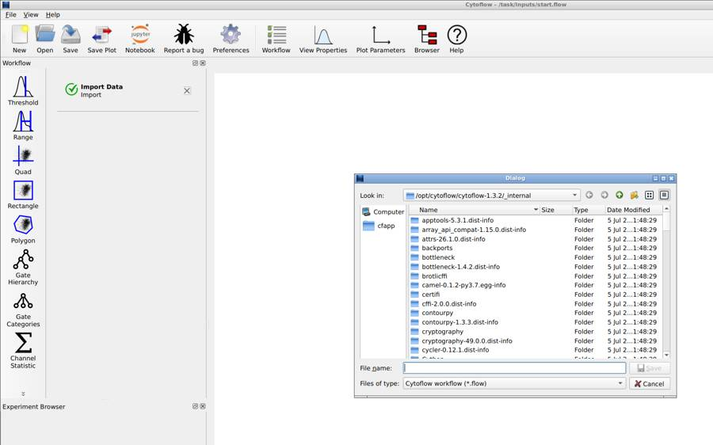
text(await tools.exec_command({cmd:"cu click 1037 741 && cu paste '/task/outputs/workflow.flow' && cu click 1313 745 && cu click 46 454 && cu screenshot /tmp/screen.png","max_output_tokens":1000}));
image((await tools.view_image({path:"/tmp/screen.png"})).image_url);
Script completed Wall time 1.7 seconds Output:
{"chunk_id":"ff41ca","wall_time_seconds":1.553244298,"exit_code":0,"original_token_count":4,"output":"/tmp/screen.png\n"}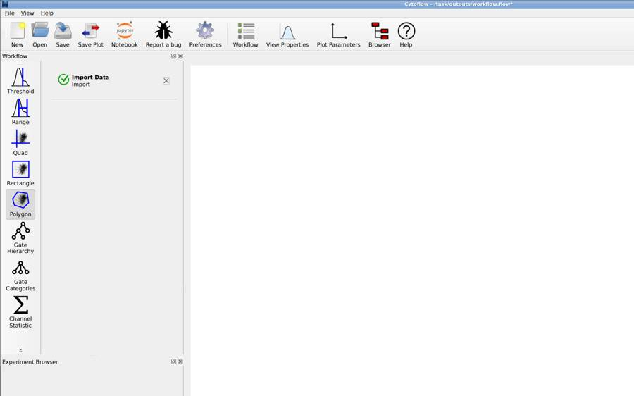
text(await tools.exec_command({cmd:"cu screenshot /tmp/screen.png","max_output_tokens":1000}));
image((await tools.view_image({path:"/tmp/screen.png"})).image_url);
Script completed Wall time 0.1 seconds Output:
{"chunk_id":"e74858","wall_time_seconds":0.000003961,"exit_code":0,"original_token_count":4,"output":"/tmp/screen.png\n"}
text(await tools.exec_command({cmd:"cu click 278 322 && cu type 'cells' && cu click 351 354 && cu screenshot /tmp/screen.png","max_output_tokens":1000}));
image((await tools.view_image({path:"/tmp/screen.png"})).image_url);
Script completed Wall time 0.4 seconds Output:
{"chunk_id":"d5171a","wall_time_seconds":0.246101537,"exit_code":0,"original_token_count":4,"output":"/tmp/screen.png\n"}
text(await tools.exec_command({cmd:"cu click 222 496 && cu click 350 386 && cu screenshot /tmp/screen.png","max_output_tokens":1000}));
image((await tools.view_image({path:"/tmp/screen.png"})).image_url);
Script completed Wall time 0.3 seconds Output:
{"chunk_id":"42e8ad","wall_time_seconds":0.119498443,"exit_code":0,"original_token_count":4,"output":"/tmp/screen.png\n"}
text(await tools.exec_command({cmd:"cu click 222 600 && cu click 654 74 && cu screenshot /tmp/screen.png","max_output_tokens":1000}));
image((await tools.view_image({path:"/tmp/screen.png"})).image_url);
Script completed Wall time 0.3 seconds Output:
{"chunk_id":"ab7d29","wall_time_seconds":0.118243067,"exit_code":0,"original_token_count":4,"output":"/tmp/screen.png\n"}
text(await tools.exec_command({cmd:"cu screenshot /tmp/screen.png","max_output_tokens":1000}));
image((await tools.view_image({path:"/tmp/screen.png"})).image_url);
Script completed Wall time 0.1 seconds Output:
{"chunk_id":"637570","wall_time_seconds":0.000003613,"exit_code":0,"original_token_count":4,"output":"/tmp/screen.png\n"}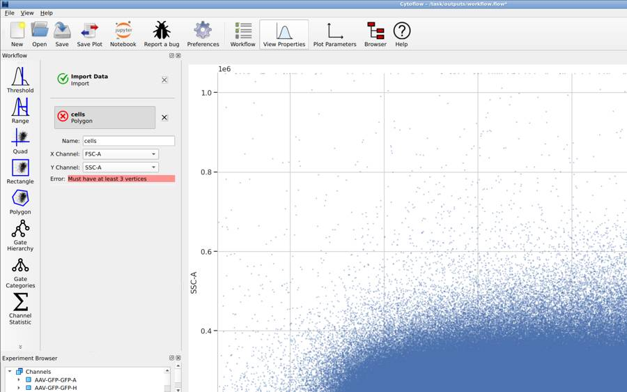
text(await tools.exec_command({cmd:"cu click 654 74 && cu screenshot /tmp/screen.png","max_output_tokens":1000}));
image((await tools.view_image({path:"/tmp/screen.png"})).image_url);
Script completed Wall time 0.2 seconds Output:
{"chunk_id":"6986a3","wall_time_seconds":0.045073618,"exit_code":0,"original_token_count":4,"output":"/tmp/screen.png\n"}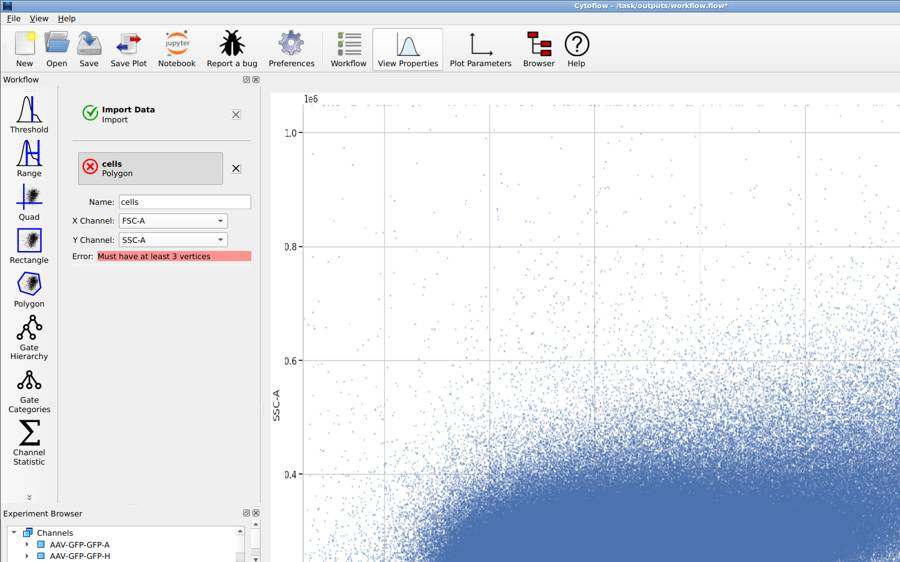
text(await tools.exec_command({cmd:"cu click 753 9 double && cu screenshot /tmp/screen.png","max_output_tokens":1000}));
image((await tools.view_image({path:"/tmp/screen.png"})).image_url);
Script completed Wall time 0.3 seconds Output:
{"chunk_id":"3452a3","wall_time_seconds":0.1414416,"exit_code":0,"original_token_count":4,"output":"/tmp/screen.png\n"}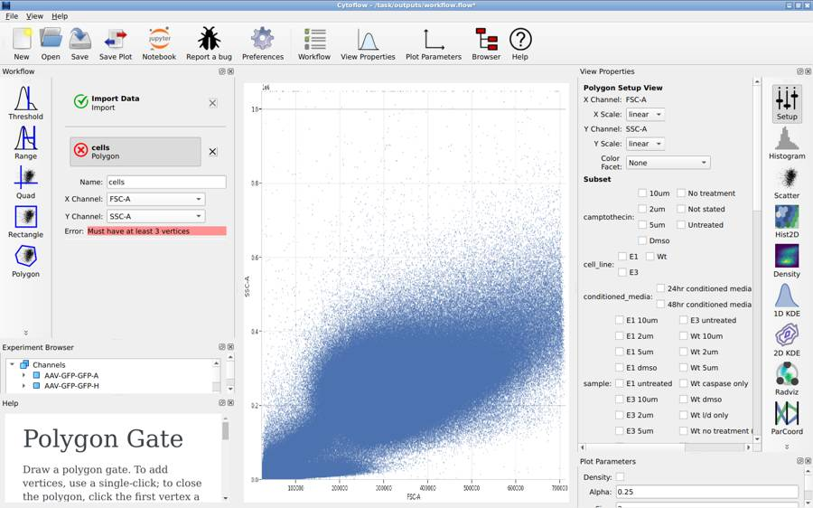
text(await tools.exec_command({cmd:"cu click 532 829 && cu click 573 714 && cu click 650 509 && cu click 994 370 && cu click 999 730 && cu click 711 826 && cu click 532 829 && cu key ctrl+s && cu screenshot /tmp/screen.png","max_output_tokens":1000}));
image((await tools.view_image({path:"/tmp/screen.png"})).image_url);
Script completed Wall time 0.9 seconds Output:
{"chunk_id":"5e7c83","wall_time_seconds":0.695093917,"exit_code":0,"original_token_count":4,"output":"/tmp/screen.png\n"}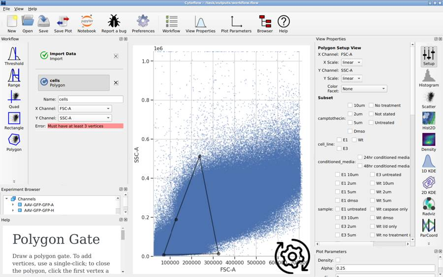
text(await tools.exec_command({cmd:"cu screenshot /tmp/screen.png","max_output_tokens":1000}));
image((await tools.view_image({path:"/tmp/screen.png"})).image_url);
Script completed Wall time 0.1 seconds Output:
{"chunk_id":"a3a052","wall_time_seconds":0.000005208,"exit_code":0,"original_token_count":4,"output":"/tmp/screen.png\n"}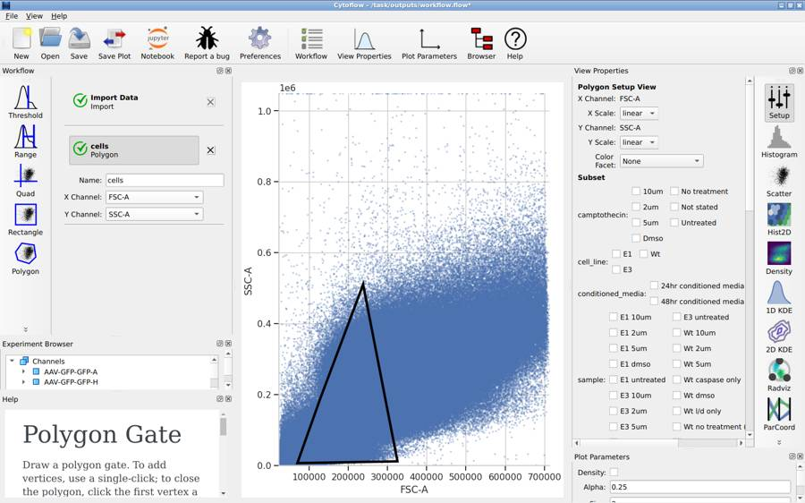
text(await tools.exec_command({cmd:"cu click 553 817 && cu click 553 731 && cu click 623 579 && cu click 762 420 && cu click 980 325 && cu click 980 757 && cu click 693 808 && cu click 553 817 && cu screenshot /tmp/screen.png","max_output_tokens":1000}));
image((await tools.view_image({path:"/tmp/screen.png"})).image_url);
Script completed Wall time 0.9 seconds Output:
{"chunk_id":"261901","wall_time_seconds":0.770555235,"exit_code":0,"original_token_count":4,"output":"/tmp/screen.png\n"}text(await tools.exec_command({cmd:"cu click 46 454 && cu screenshot /tmp/screen.png","max_output_tokens":1000}));
image((await tools.view_image({path:"/tmp/screen.png"})).image_url);
Script completed Wall time 0.2 seconds Output:
{"chunk_id":"f5016a","wall_time_seconds":0.038433115,"exit_code":0,"original_token_count":4,"output":"/tmp/screen.png\n"}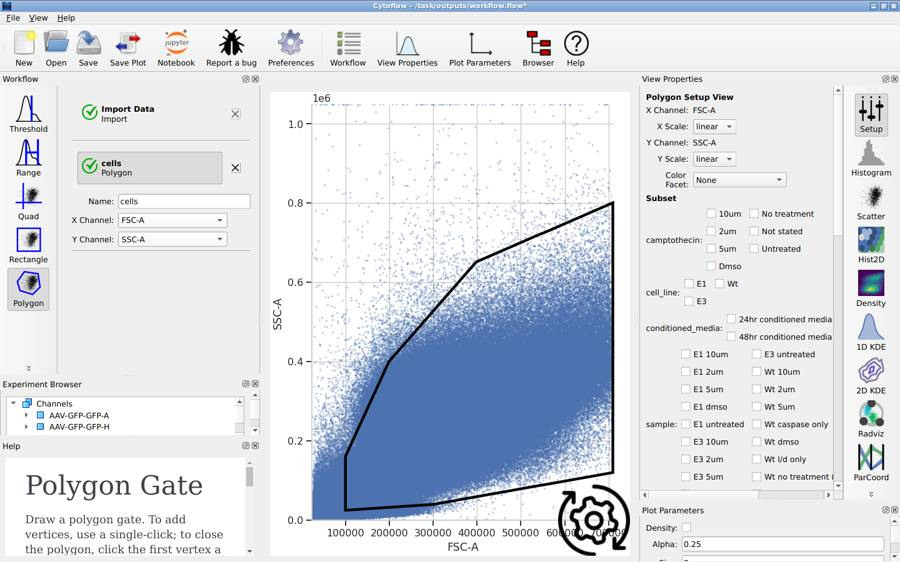
text(await tools.exec_command({cmd:"cu screenshot /tmp/screen.png","max_output_tokens":1000}));
image((await tools.view_image({path:"/tmp/screen.png"})).image_url);
Script completed Wall time 0.1 seconds Output:
{"chunk_id":"61e75f","wall_time_seconds":0.00000434,"exit_code":0,"original_token_count":4,"output":"/tmp/screen.png\n"}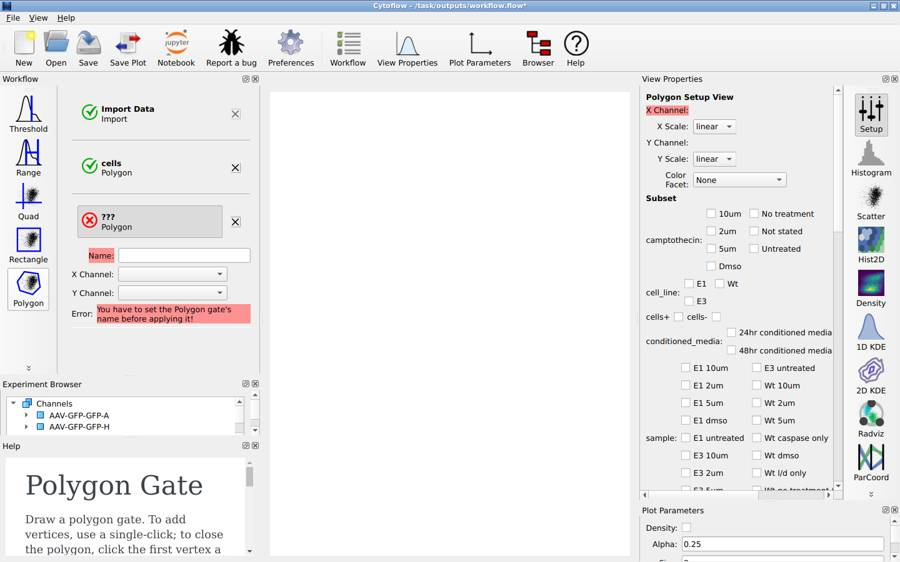
text(await tools.exec_command({cmd:"cu click 275 407 && cu type 'singlet_shape' && cu click 353 439 && cu key f && cu key Return && cu click 353 469 && cu key f && cu key Down && cu key Return && cu click 1086 507 && cu screenshot /tmp/screen.png","max_output_tokens":1000}));
image((await tools.view_image({path:"/tmp/screen.png"})).image_url);
Script completed Wall time 0.9 seconds Output:
{"chunk_id":"c1c0af","wall_time_seconds":0.744892709,"exit_code":0,"original_token_count":4,"output":"/tmp/screen.png\n"}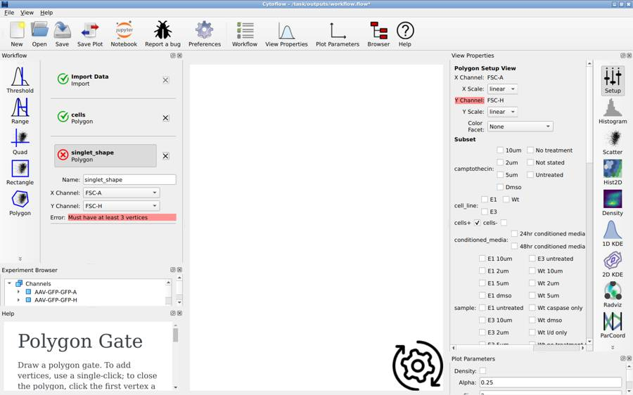
text(await tools.exec_command({cmd:"cu screenshot /tmp/screen.png","max_output_tokens":1000}));
image((await tools.view_image({path:"/tmp/screen.png"})).image_url);
Script completed Wall time 0.1 seconds Output:
{"chunk_id":"2ca780","wall_time_seconds":0.000004271,"exit_code":0,"original_token_count":4,"output":"/tmp/screen.png\n"}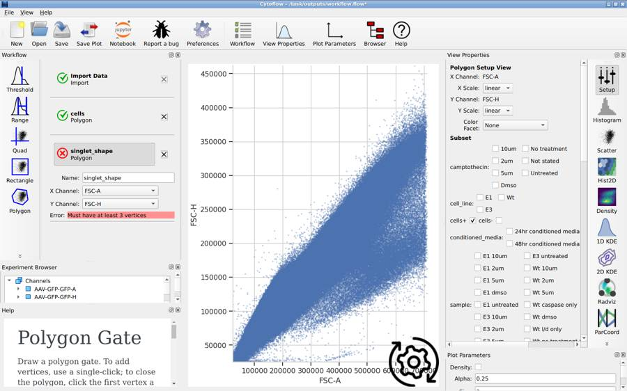
text(await tools.exec_command({cmd:"cu click 581 813 && cu click 650 740 && cu click 779 591 && cu click 978 404 && cu click 978 216 && cu click 779 467 && cu click 650 638 && cu click 581 748 && cu click 581 813 && cu screenshot /tmp/screen.png","max_output_tokens":1000}));
image((await tools.view_image({path:"/tmp/screen.png"})).image_url);
Script completed Wall time 1.0 seconds Output:
{"chunk_id":"afb491","wall_time_seconds":0.870324677,"exit_code":0,"original_token_count":4,"output":"/tmp/screen.png\n"}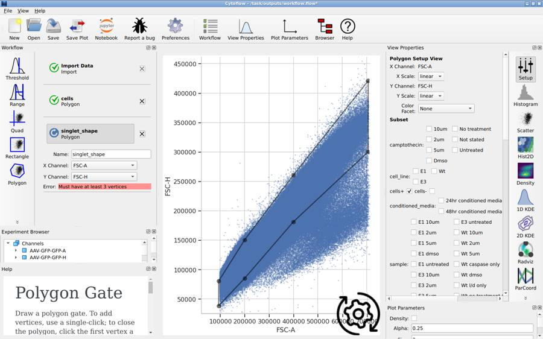
text(await tools.exec_command({cmd:"cu scroll 55 504 down 3 && cu screenshot /tmp/screen.png","max_output_tokens":1000}));
image((await tools.view_image({path:"/tmp/screen.png"})).image_url);
Script completed Wall time 0.4 seconds Output:
{"chunk_id":"964096","wall_time_seconds":0.23501254,"exit_code":0,"original_token_count":4,"output":"/tmp/screen.png\n"}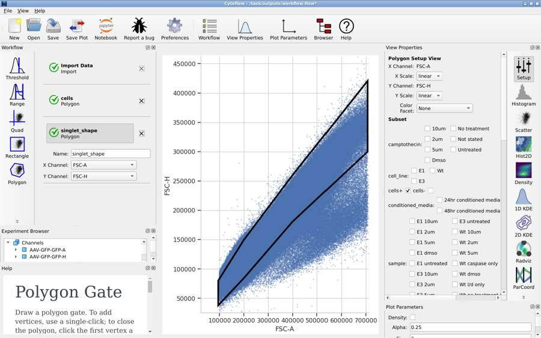
text(await tools.exec_command({cmd:"cu click 409 714 && cu click 408 615 && cu screenshot /tmp/screen.png","max_output_tokens":1000}));
image((await tools.view_image({path:"/tmp/screen.png"})).image_url);
Script completed Wall time 0.3 seconds Output:
{"chunk_id":"568523","wall_time_seconds":0.13763751,"exit_code":0,"original_token_count":4,"output":"/tmp/screen.png\n"}text(await tools.exec_command({cmd:"cu click 48 525 && cu screenshot /tmp/screen.png","max_output_tokens":1000}));
image((await tools.view_image({path:"/tmp/screen.png"})).image_url);
Script completed Wall time 0.2 seconds Output:
{"chunk_id":"d30b40","wall_time_seconds":0.028787509,"exit_code":0,"original_token_count":4,"output":"/tmp/screen.png\n"}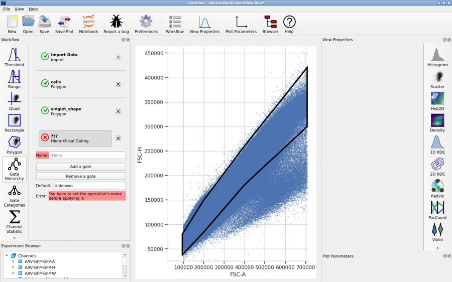
text(await tools.exec_command({cmd:"cu click 269 495 && cu key ctrl+a && cu type 'singlets' && cu click 261 532 && cu screenshot /tmp/screen.png","max_output_tokens":1000}));
image((await tools.view_image({path:"/tmp/screen.png"})).image_url);
Script completed Wall time 0.5 seconds Output:
{"chunk_id":"6c90aa","wall_time_seconds":0.36588165,"exit_code":0,"original_token_count":4,"output":"/tmp/screen.png\n"}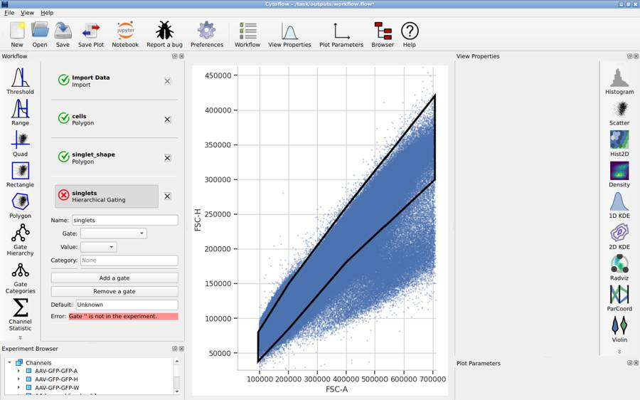
text(await tools.exec_command({cmd:"cu click 45 760 && cu screenshot /tmp/screen.png","max_output_tokens":1000}));
image((await tools.view_image({path:"/tmp/screen.png"})).image_url);
Script completed Wall time 0.2 seconds Output:
{"chunk_id":"8303ce","wall_time_seconds":0.028096324,"exit_code":0,"original_token_count":4,"output":"/tmp/screen.png\n"}text(await tools.exec_command({cmd:"cu scroll 81 702 down 6 && cu screenshot /tmp/screen.png","max_output_tokens":1000}));
image((await tools.view_image({path:"/tmp/screen.png"})).image_url);
Script completed Wall time 0.7 seconds Output:
{"chunk_id":"c6f249","wall_time_seconds":0.533693669,"exit_code":0,"original_token_count":4,"output":"/tmp/screen.png\n"}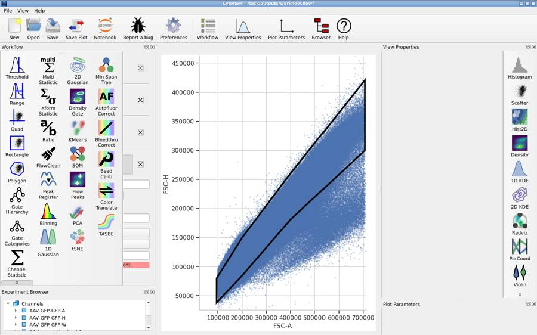
text(await tools.exec_command({cmd:"cu key Escape && cu click 922 69 && cu screenshot /tmp/screen.png","max_output_tokens":1000}));
image((await tools.view_image({path:"/tmp/screen.png"})).image_url);
Script completed Wall time 0.2 seconds Output:
{"chunk_id":"045fa0","wall_time_seconds":0.045729042,"exit_code":0,"original_token_count":4,"output":"/tmp/screen.png\n"}text(await tools.exec_command({cmd:"cu scroll 273 830 down 4 && cu screenshot /tmp/screen.png","max_output_tokens":1000}));
image((await tools.view_image({path:"/tmp/screen.png"})).image_url);
Script completed Wall time 0.5 seconds Output:
{"chunk_id":"bb0a89","wall_time_seconds":0.331559219,"exit_code":0,"original_token_count":4,"output":"/tmp/screen.png\n"}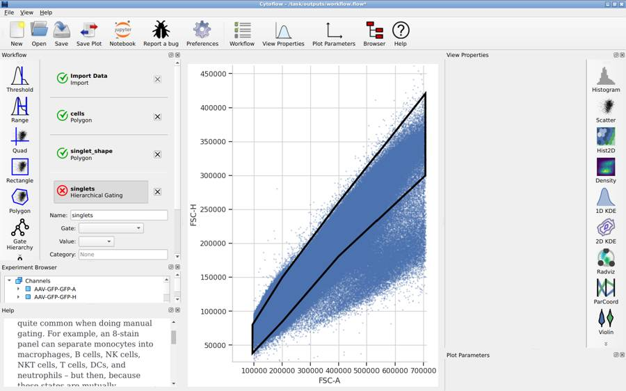
text(await tools.exec_command({cmd:"cu drag 206 703 206 365 && cu scroll 280 538 up 8 && cu screenshot /tmp/screen.png","max_output_tokens":1000}));
image((await tools.view_image({path:"/tmp/screen.png"})).image_url);
Script completed Wall time 0.9 seconds Output:
{"chunk_id":"38855c","wall_time_seconds":0.737115839,"exit_code":0,"original_token_count":4,"output":"/tmp/screen.png\n"}text(await tools.exec_command({cmd:"cu scroll 273 824 up 5 && cu screenshot /tmp/screen.png","max_output_tokens":1000}));
image((await tools.view_image({path:"/tmp/screen.png"})).image_url);
Script completed Wall time 0.6 seconds Output:
{"chunk_id":"898dd8","wall_time_seconds":0.429454752,"exit_code":0,"original_token_count":4,"output":"/tmp/screen.png\n"}text(await tools.exec_command({cmd:"cu scroll 273 824 down 2 && cu screenshot /tmp/screen.png","max_output_tokens":1000}));
image((await tools.view_image({path:"/tmp/screen.png"})).image_url);
Script completed Wall time 0.3 seconds Output:
{"chunk_id":"3b172d","wall_time_seconds":0.130466162,"exit_code":0,"original_token_count":4,"output":"/tmp/screen.png\n"}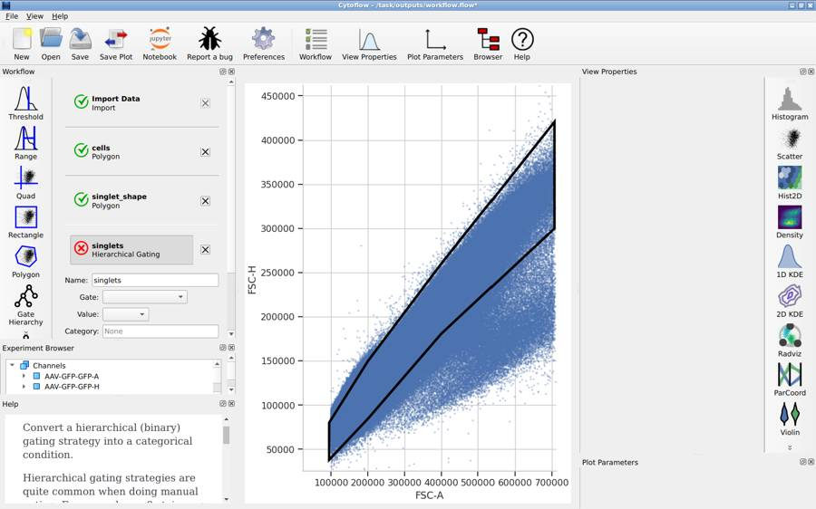
text(await tools.exec_command({cmd:"cu scroll 273 824 down 6 && cu screenshot /tmp/screen.png","max_output_tokens":1000}));
image((await tools.view_image({path:"/tmp/screen.png"})).image_url);
Script completed Wall time 0.7 seconds Output:
{"chunk_id":"8f1fd5","wall_time_seconds":0.530050432,"exit_code":0,"original_token_count":4,"output":"/tmp/screen.png\n"}text(await tools.exec_command({cmd:"cu scroll 273 824 down 3 && cu screenshot /tmp/screen.png","max_output_tokens":1000}));
image((await tools.view_image({path:"/tmp/screen.png"})).image_url);
Script completed Wall time 0.4 seconds Output:
{"chunk_id":"9aa4b4","wall_time_seconds":0.229262805,"exit_code":0,"original_token_count":4,"output":"/tmp/screen.png\n"}text(await tools.exec_command({cmd:"cu scroll 273 824 up 2 && cu screenshot /tmp/screen.png","max_output_tokens":1000}));
image((await tools.view_image({path:"/tmp/screen.png"})).image_url);
Script completed Wall time 0.3 seconds Output:
{"chunk_id":"61d0c3","wall_time_seconds":0.129696723,"exit_code":0,"original_token_count":4,"output":"/tmp/screen.png\n"}text(await tools.exec_command({cmd:"cu scroll 273 824 down 7 && cu screenshot /tmp/screen.png","max_output_tokens":1000}));
image((await tools.view_image({path:"/tmp/screen.png"})).image_url);
Script completed Wall time 0.8 seconds Output:
{"chunk_id":"f994dc","wall_time_seconds":0.631016948,"exit_code":0,"original_token_count":4,"output":"/tmp/screen.png\n"}text(await tools.exec_command({cmd:"cu scroll 273 824 down 2 && cu screenshot /tmp/screen.png","max_output_tokens":1000}));
image((await tools.view_image({path:"/tmp/screen.png"})).image_url);
Script completed Wall time 0.3 seconds Output:
{"chunk_id":"381792","wall_time_seconds":0.133555477,"exit_code":0,"original_token_count":4,"output":"/tmp/screen.png\n"}text(await tools.exec_command({cmd:"cu click 362 441 && cu screenshot /tmp/screen.png","max_output_tokens":1000}));
image((await tools.view_image({path:"/tmp/screen.png"})).image_url);
Script completed Wall time 0.2 seconds Output:
{"chunk_id":"00e485","wall_time_seconds":0.016956815,"exit_code":0,"original_token_count":4,"output":"/tmp/screen.png\n"}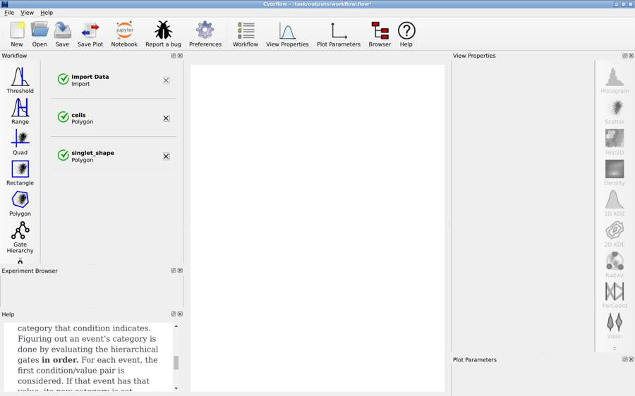
text(await tools.exec_command({cmd:"cu click 408 713 && cu click 408 784 && cu click 239 350 && cu screenshot /tmp/screen.png","max_output_tokens":1000}));
image((await tools.view_image({path:"/tmp/screen.png"})).image_url);
Script completed Wall time 0.4 seconds Output:
{"chunk_id":"786a75","wall_time_seconds":0.227392035,"exit_code":0,"original_token_count":4,"output":"/tmp/screen.png\n"}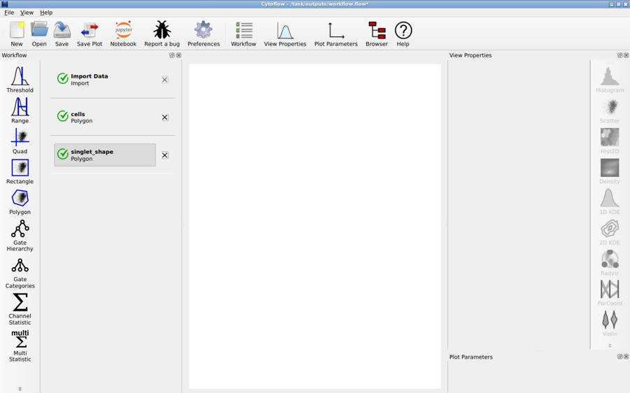
text(await tools.exec_command({cmd:"cu screenshot /tmp/screen.png","max_output_tokens":1000}));
image((await tools.view_image({path:"/tmp/screen.png"})).image_url);
Script completed Wall time 0.1 seconds Output:
{"chunk_id":"515590","wall_time_seconds":0.000003842,"exit_code":0,"original_token_count":4,"output":"/tmp/screen.png\n"}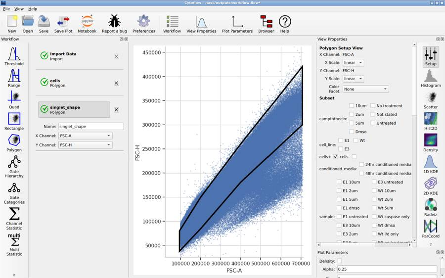
text(await tools.exec_command({cmd:"cu click 279 408 && cu key ctrl+a && cu type 'singlets' && cu click 164 409 && cu click 47 248 && cu screenshot /tmp/screen.png","max_output_tokens":1000}));
image((await tools.view_image({path:"/tmp/screen.png"})).image_url);
Script completed Wall time 0.7 seconds Output:
{"chunk_id":"8f391a","wall_time_seconds":0.476913584,"exit_code":0,"original_token_count":4,"output":"/tmp/screen.png\n"}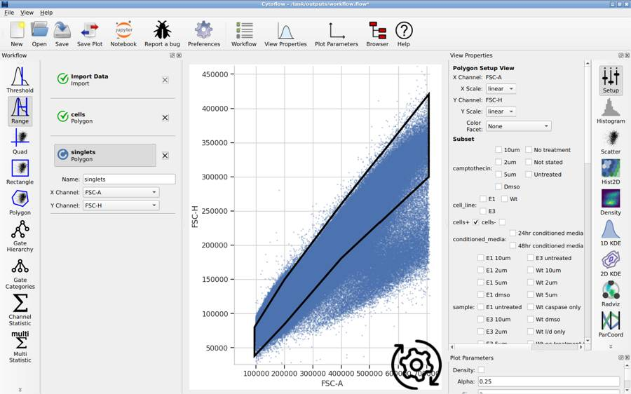
text(await tools.exec_command({cmd:"cu screenshot /tmp/screen.png","max_output_tokens":1000}));
image((await tools.view_image({path:"/tmp/screen.png"})).image_url);
Script completed Wall time 0.1 seconds Output:
{"chunk_id":"cf4125","wall_time_seconds":0.000004758,"exit_code":0,"original_token_count":4,"output":"/tmp/screen.png\n"}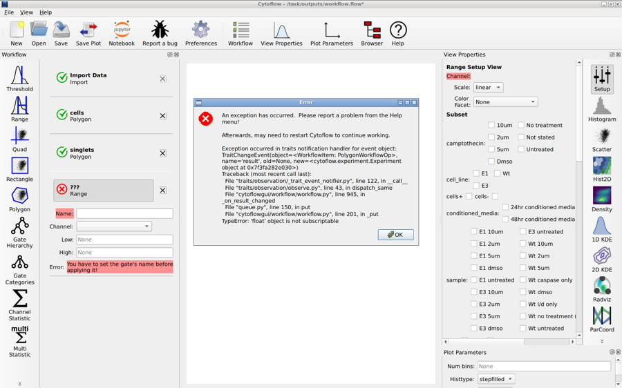
text(await tools.exec_command({cmd:"cu click 912 546 && cu click 278 495 && cu type 'live' && cu click 341 525 && cu key a && cu key Down && cu key Down && cu key Down && cu key Return && cu click 1085 455 && cu key ctrl+s && cu screenshot /tmp/screen.png","max_output_tokens":1000}));
image((await tools.view_image({path:"/tmp/screen.png"})).image_url);
Script completed Wall time 0.7 seconds Output:
{"chunk_id":"d7dc71","wall_time_seconds":0.545975648,"exit_code":0,"original_token_count":4,"output":"/tmp/screen.png\n"}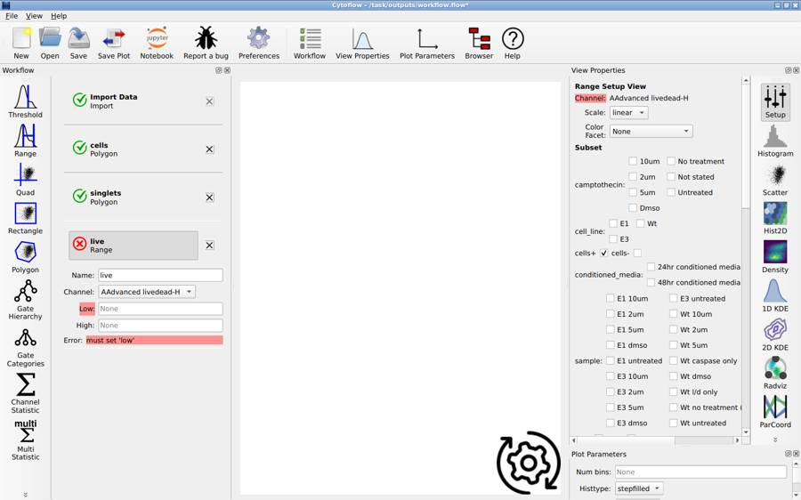
text(await tools.exec_command({cmd:"cu click 339 525 && cu key Home && cu key Down && cu key Down && cu key Down && cu key Return && cu click 1154 203 && cu screenshot /tmp/screen.png","max_output_tokens":1000}));
image((await tools.view_image({path:"/tmp/screen.png"})).image_url);
Script completed Wall time 0.4 seconds Output:
{"chunk_id":"30108e","wall_time_seconds":0.208506359,"exit_code":0,"original_token_count":4,"output":"/tmp/screen.png\n"}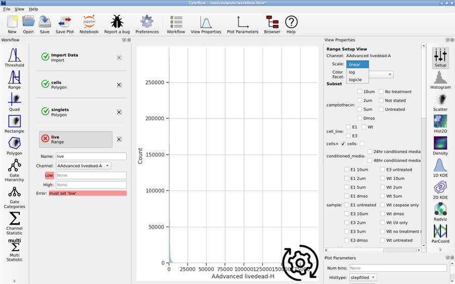
text(await tools.exec_command({cmd:"cu click 1122 253 && cu scroll 1254 737 down 6 && cu screenshot /tmp/screen.png","max_output_tokens":1000}));
image((await tools.view_image({path:"/tmp/screen.png"})).image_url);
Script completed Wall time 0.8 seconds Output:
{"chunk_id":"906083","wall_time_seconds":0.631245206,"exit_code":0,"original_token_count":4,"output":"/tmp/screen.png\n"}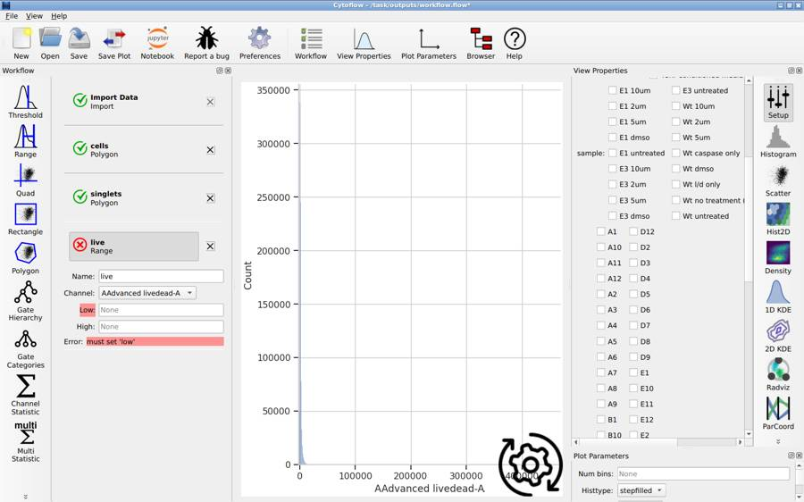
text(await tools.exec_command({cmd:"cu key ctrl+s && cu key ctrl+o && cu paste '/task/outputs/workflow.flow' && cu screenshot /tmp/screen.png","max_output_tokens":1000}));
image((await tools.view_image({path:"/tmp/screen.png"})).image_url);
Script completed Wall time 1.5 seconds Output:
{"chunk_id":"ebfc98","wall_time_seconds":1.311471368,"exit_code":0,"original_token_count":4,"output":"/tmp/screen.png\n"}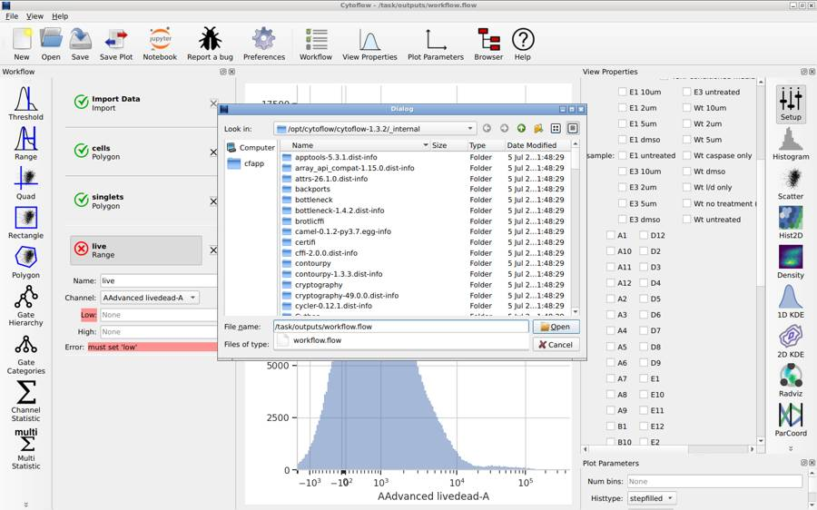
text(await tools.exec_command({cmd:"cu click 980 577 && cu screenshot /tmp/screen.png","max_output_tokens":1000}));
image((await tools.view_image({path:"/tmp/screen.png"})).image_url);
Script completed Wall time 0.2 seconds Output:
{"chunk_id":"f37380","wall_time_seconds":0.029946841,"exit_code":0,"original_token_count":4,"output":"/tmp/screen.png\n"}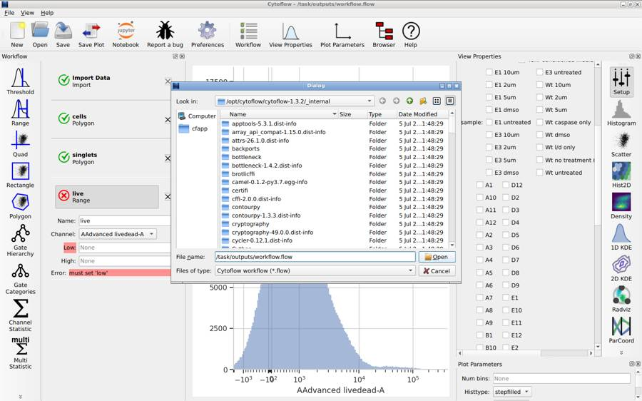
text(await tools.exec_command({cmd:"cu click 981 576 && cu screenshot /tmp/screen.png","max_output_tokens":1000}));
image((await tools.view_image({path:"/tmp/screen.png"})).image_url);
Script completed Wall time 0.2 seconds Output:
{"chunk_id":"793b20","wall_time_seconds":0.030646485,"exit_code":0,"original_token_count":4,"output":"/tmp/screen.png\n"}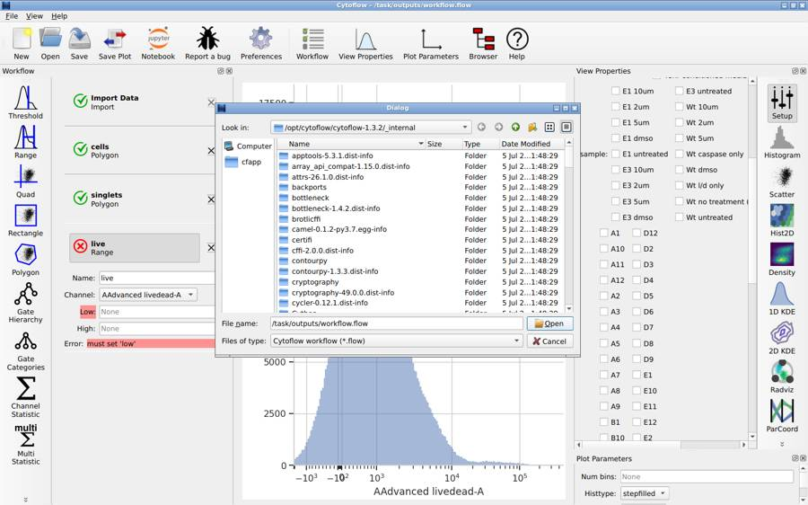
text(await tools.exec_command({cmd:"sleep 2 && cu screenshot /tmp/screen.png","max_output_tokens":1000}));
image((await tools.view_image({path:"/tmp/screen.png"})).image_url);
Script completed Wall time 2.1 seconds Output:
{"chunk_id":"50a826","wall_time_seconds":1.915677659,"exit_code":0,"original_token_count":4,"output":"/tmp/screen.png\n"}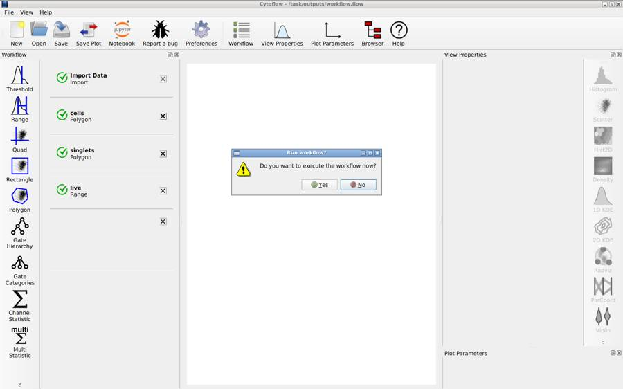
text(await tools.exec_command({cmd:"cu click 738 427 && sleep 25 && cu click 242 438 && sleep 2 && cu screenshot /tmp/screen.png","yield_time_ms":30000,"max_output_tokens":1000}));
image((await tools.view_image({path:"/tmp/screen.png"})).image_url);
Script completed Wall time 27.3 seconds Output:
{"chunk_id":"8d37d5","wall_time_seconds":27.131621886,"exit_code":0,"original_token_count":4,"output":"/tmp/screen.png\n"}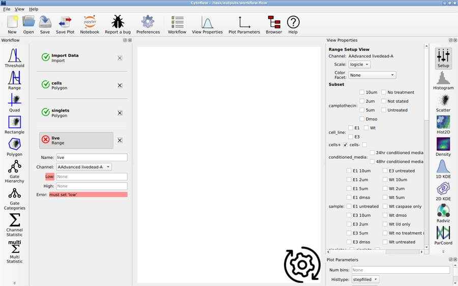
text(await tools.exec_command({cmd:"cu scroll 1270 727 down 4 && sleep 2 && cu screenshot /tmp/screen.png","max_output_tokens":1000}));
image((await tools.view_image({path:"/tmp/screen.png"})).image_url);
Script completed Wall time 2.5 seconds Output:
{"chunk_id":"eb6bc7","wall_time_seconds":2.327638863,"exit_code":0,"original_token_count":4,"output":"/tmp/screen.png\n"}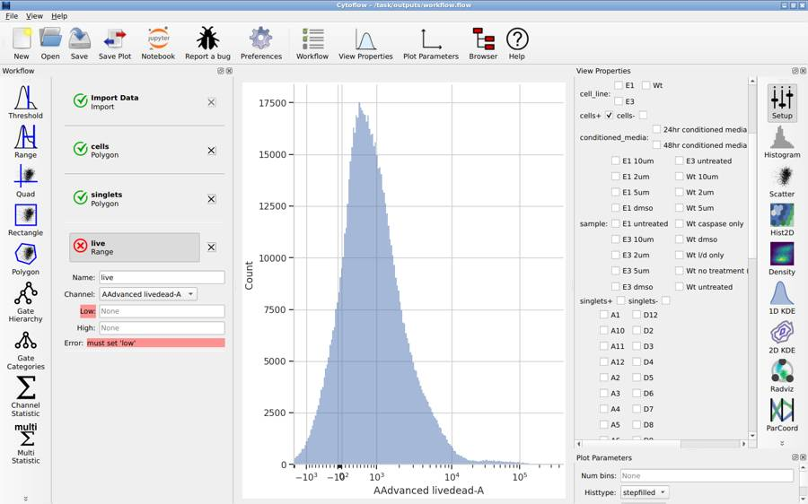
text(await tools.exec_command({cmd:"cu click 1106 536 && cu click 1210 399 && sleep 3 && cu screenshot /tmp/screen.png","max_output_tokens":1000}));
image((await tools.view_image({path:"/tmp/screen.png"})).image_url);
Script completed Wall time 3.3 seconds Output:
{"chunk_id":"61e5f3","wall_time_seconds":3.130123729,"exit_code":0,"original_token_count":4,"output":"/tmp/screen.png\n"}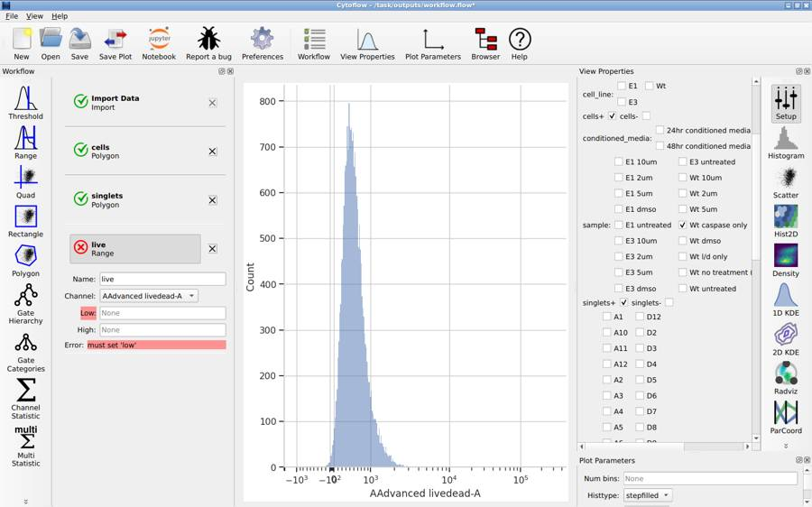
text(await tools.exec_command({cmd:"cu click 1210 399 && cu click 1210 455 && sleep 2 && cu screenshot /tmp/screen.png","max_output_tokens":1000}));
image((await tools.view_image({path:"/tmp/screen.png"})).image_url);
Script completed Wall time 2.3 seconds Output:
{"chunk_id":"b0f7ac","wall_time_seconds":2.132341041,"exit_code":0,"original_token_count":4,"output":"/tmp/screen.png\n"}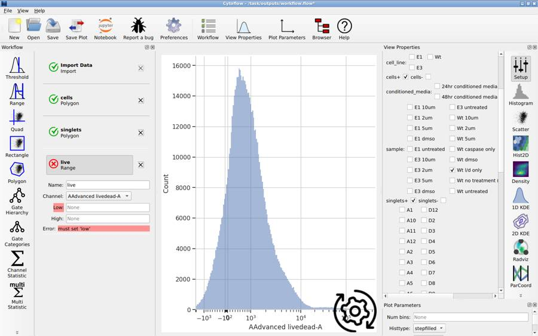
text(await tools.exec_command({cmd:"sleep 2 && cu screenshot /tmp/screen.png","max_output_tokens":1000}));
image((await tools.view_image({path:"/tmp/screen.png"})).image_url);
Script completed Wall time 2.1 seconds Output:
{"chunk_id":"66721f","wall_time_seconds":1.9206496419999999,"exit_code":0,"original_token_count":4,"output":"/tmp/screen.png\n"}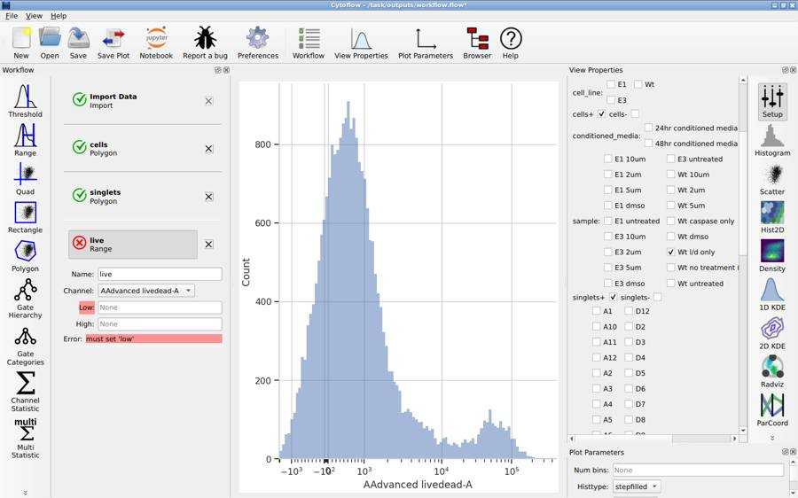
text(await tools.exec_command({cmd:"cu click 265 555 && cu key ctrl+a && cu type '-1000000' && cu click 266 586 && cu key ctrl+a && cu type '10000' && cu click 153 585 && sleep 3 && cu screenshot /task/outputs/live_gate_control.png && cu key ctrl+s","max_output_tokens":1000}));
image((await tools.view_image({path:"/task/outputs/live_gate_control.png"})).image_url);
Script completed Wall time 3.8 seconds Output:
{"chunk_id":"832f71","wall_time_seconds":3.659303409,"exit_code":0,"original_token_count":9,"output":"/task/outputs/live_gate_control.png\n"}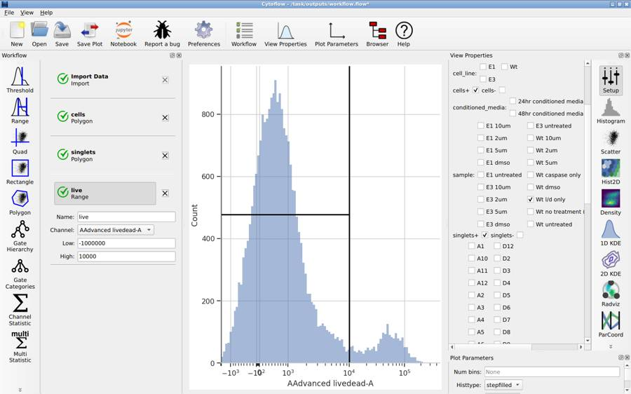
text(await tools.exec_command({cmd:"cu click 47 174 && sleep 2 && cu screenshot /tmp/screen.png","max_output_tokens":1000}));
image((await tools.view_image({path:"/tmp/screen.png"})).image_url);
Script completed Wall time 2.2 seconds Output:
{"chunk_id":"1443b6","wall_time_seconds":2.024815112,"exit_code":0,"original_token_count":4,"output":"/tmp/screen.png\n"}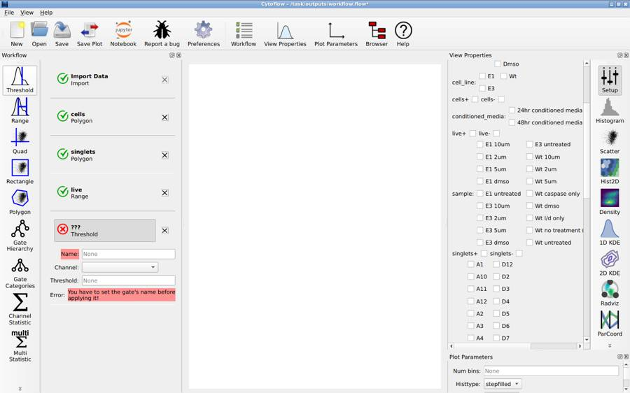
text(await tools.exec_command({cmd:"cu click 271 582 && cu type 'caspase_positive' && cu click 350 612 && cu key Home && cu key Return && cu click 1085 227 && cu click 1080 305 && cu click 1105 580 && cu click 1210 499 && cu scroll 1268 287 up 20 && sleep 3 && cu screenshot /tmp/screen.png","max_output_tokens":1000}));
image((await tools.view_image({path:"/tmp/screen.png"})).image_url);
Script completed Wall time 6.2 seconds Output:
{"chunk_id":"277a64","wall_time_seconds":5.997650406,"exit_code":0,"original_token_count":4,"output":"/tmp/screen.png\n"}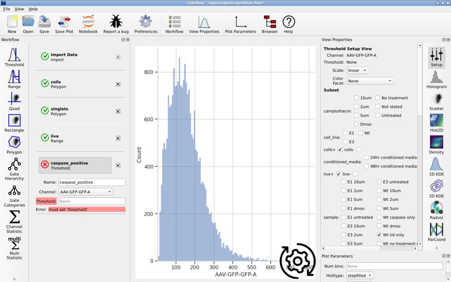
text(await tools.exec_command({cmd:"cu click 1164 225 && cu key End && cu key Return && cu click 275 642 && cu type '1000' && cu click 153 643 && sleep 3 && cu screenshot /task/outputs/caspase_gate_control.png && cu click 1210 748 && sleep 3 && cu screenshot /tmp/screen.png","max_output_tokens":1000}));
image((await tools.view_image({path:"/task/outputs/caspase_gate_control.png"})).image_url);
image((await tools.view_image({path:"/tmp/screen.png"})).image_url);
Script completed Wall time 6.7 seconds Output:
{"chunk_id":"746675","wall_time_seconds":6.549518541,"exit_code":0,"original_token_count":14,"output":"/task/outputs/caspase_gate_control.png\n/tmp/screen.png\n"}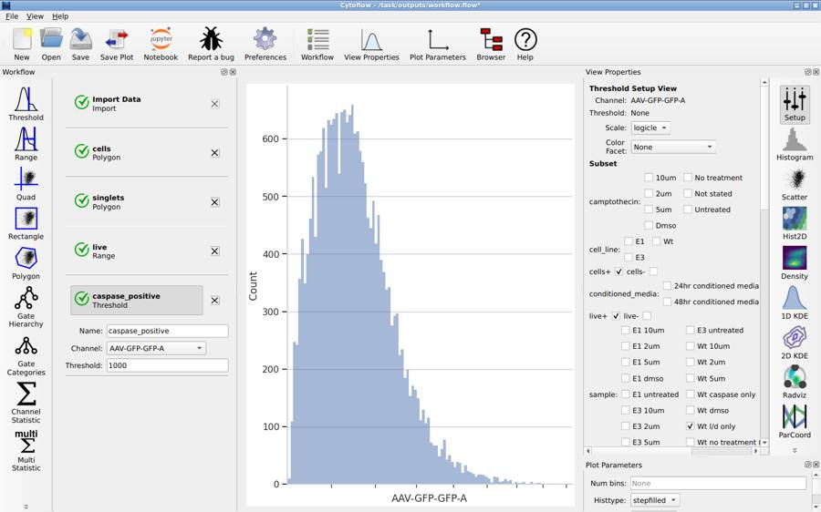
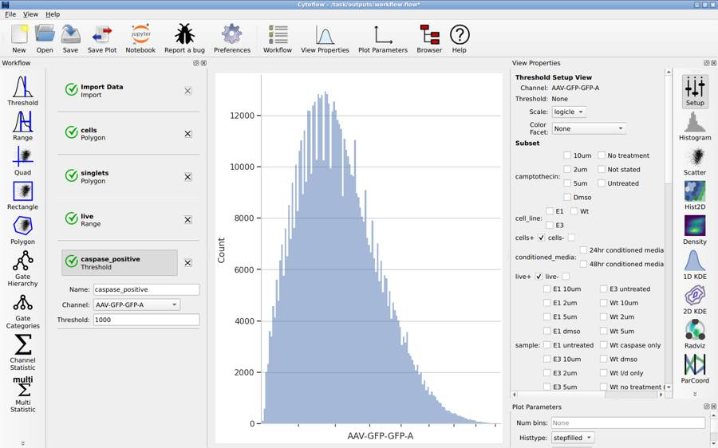
text(await tools.exec_command({cmd:"sleep 3 && cu screenshot /tmp/screen.png","max_output_tokens":1000}));
image((await tools.view_image({path:"/tmp/screen.png"})).image_url);
Script completed Wall time 3.1 seconds Output:
{"chunk_id":"23de1f","wall_time_seconds":2.9206030480000003,"exit_code":0,"original_token_count":4,"output":"/tmp/screen.png\n"}text(await tools.exec_command({cmd:"cu key ctrl+s && cu click 45 695 && sleep 2 && cu screenshot /tmp/screen.png","max_output_tokens":1000}));
image((await tools.view_image({path:"/tmp/screen.png"})).image_url);
Script completed Wall time 2.2 seconds Output:
{"chunk_id":"88f8dd","wall_time_seconds":2.049649741,"exit_code":0,"original_token_count":4,"output":"/tmp/screen.png\n"}text(await tools.exec_command({cmd:"cu click 274 668 && cu type 'count_all' && cu click 341 698 && cu key f && cu key Return && cu click 320 728 && cu screenshot /tmp/screen.png","max_output_tokens":1000}));
image((await tools.view_image({path:"/tmp/screen.png"})).image_url);
Script completed Wall time 0.7 seconds Output:
{"chunk_id":"7d01b3","wall_time_seconds":0.494869776,"exit_code":0,"original_token_count":4,"output":"/tmp/screen.png\n"}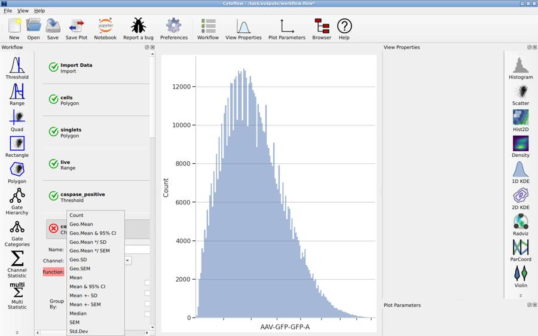
text(await tools.exec_command({cmd:"cu click 211 578 && cu drag 419 471 561 471 && cu scroll 302 822 down 5 && sleep 2 && cu screenshot /tmp/screen.png","max_output_tokens":1000}));
image((await tools.view_image({path:"/tmp/screen.png"})).image_url);
Script completed Wall time 2.7 seconds Output:
{"chunk_id":"8c3abf","wall_time_seconds":2.562172446,"exit_code":0,"original_token_count":4,"output":"/tmp/screen.png\n"}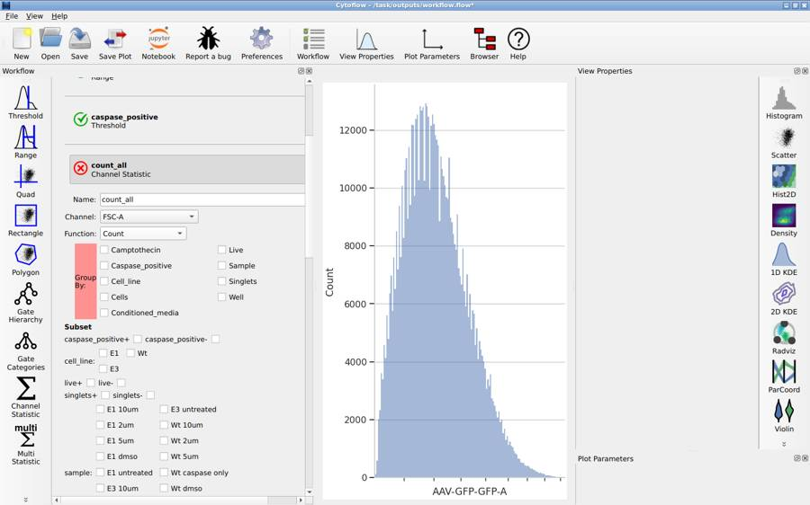
text(await tools.exec_command({cmd:"cu click 395 529 && sleep 3 && cu click 1394 793 && cu scroll 1393 724 down 4 && cu screenshot /tmp/screen.png","max_output_tokens":1000}));
image((await tools.view_image({path:"/tmp/screen.png"})).image_url);
Script completed Wall time 3.7 seconds Output:
{"chunk_id":"4711c2","wall_time_seconds":3.534920701,"exit_code":0,"original_token_count":4,"output":"/tmp/screen.png\n"}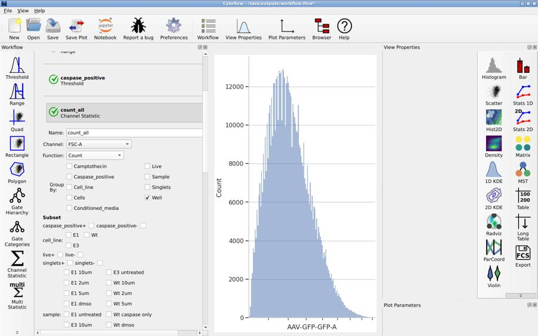
text(await tools.exec_command({cmd:"cu click 1397 525 && sleep 2 && cu screenshot /tmp/screen.png","max_output_tokens":1000}));
image((await tools.view_image({path:"/tmp/screen.png"})).image_url);
Script completed Wall time 2.2 seconds Output:
{"chunk_id":"61288a","wall_time_seconds":2.024206521,"exit_code":0,"original_token_count":4,"output":"/tmp/screen.png\n"}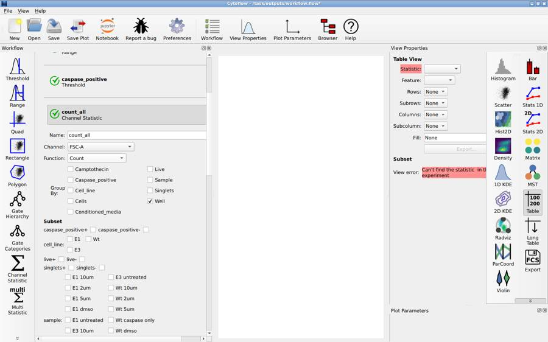
text(await tools.exec_command({cmd:"cu click 1060 475 && cu click 1199 181 && cu screenshot /tmp/screen.png","max_output_tokens":1000}));
image((await tools.view_image({path:"/tmp/screen.png"})).image_url);
Script completed Wall time 0.3 seconds Output:
{"chunk_id":"b4d7a5","wall_time_seconds":0.128292986,"exit_code":0,"original_token_count":4,"output":"/tmp/screen.png\n"}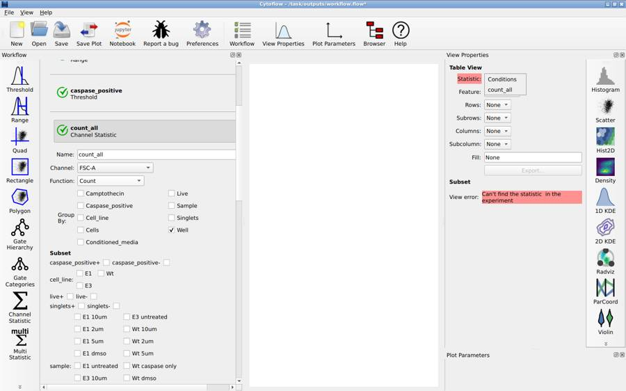
text(await tools.exec_command({cmd:"cu click 1155 205 && cu click 1184 211 && cu key Home && cu key Return && cu click 1164 241 && cu key End && cu key Return && sleep 2 && cu screenshot /tmp/screen.png","max_output_tokens":1000}));
image((await tools.view_image({path:"/tmp/screen.png"})).image_url);
Script completed Wall time 2.5 seconds Output:
{"chunk_id":"aa9dc1","wall_time_seconds":2.295647226,"exit_code":0,"original_token_count":4,"output":"/tmp/screen.png\n"}text(await tools.exec_command({cmd:"cu click 1163 241 && cu screenshot /tmp/screen.png","max_output_tokens":1000}));
image((await tools.view_image({path:"/tmp/screen.png"})).image_url);
Script completed Wall time 0.2 seconds Output:
{"chunk_id":"656e64","wall_time_seconds":0.024265111,"exit_code":0,"original_token_count":4,"output":"/tmp/screen.png\n"}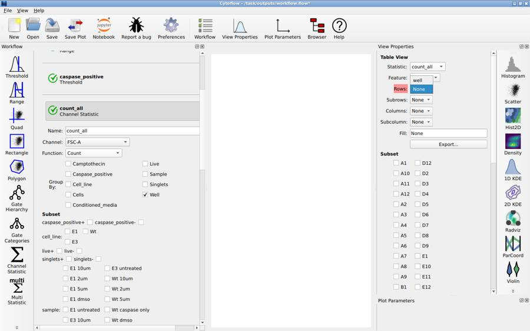
text(await tools.exec_command({cmd:"cu click 1135 216 && sleep 2 && cu click 1214 392 && sleep 1 && cu screenshot /tmp/screen.png","max_output_tokens":1000}));
image((await tools.view_image({path:"/tmp/screen.png"})).image_url);
Script completed Wall time 3.3 seconds Output:
{"chunk_id":"2b48f8","wall_time_seconds":3.135917972,"exit_code":0,"original_token_count":4,"output":"/tmp/screen.png\n"}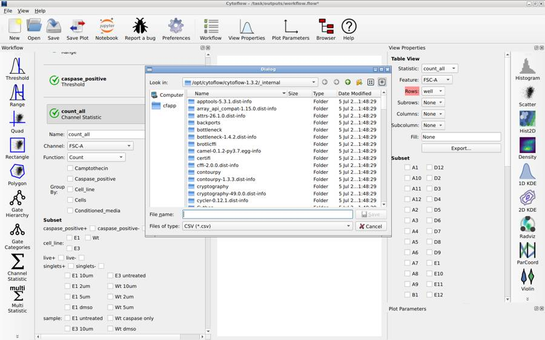
text(await tools.exec_command({cmd:"cu paste '/task/outputs/gui_count_all.csv' && cu click 977 567 && sleep 3 && cu screenshot /tmp/screen.png","max_output_tokens":1000}));
image((await tools.view_image({path:"/tmp/screen.png"})).image_url);
text(await tools.exec_command({cmd:"cat /task/outputs/gui_count_all.csv","max_output_tokens":3000}));
Script completed Wall time 4.6 seconds Output:
{"chunk_id":"61769b","wall_time_seconds":4.355256329,"exit_code":0,"original_token_count":4,"output":"/tmp/screen.png\n"}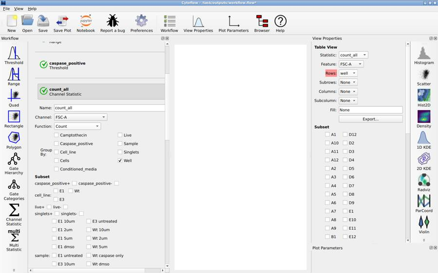
{"chunk_id":"6633db","wall_time_seconds":0.000008265,"exit_code":0,"original_token_count":348,"output":"well = A1,30920.0\nwell = A10,24604.0\nwell = A11,38346.0\nwell = A12,31708.0\nwell = A2,31266.0\nwell = A3,38748.0\nwell = A4,34861.0\nwell = A5,14011.0\nwell = A6,25118.0\nwell = A7,27544.0\nwell = A8,30067.0\nwell = A9,17224.0\nwell = B1,9849.0\nwell = B10,8268.0\nwell = B11,10609.0\nwell = B12,9382.0\nwell = B2,10963.0\nwell = B3,14921.0\nwell = B4,12172.0\nwell = B5,5068.0\nwell = B6,9638.0\nwell = B7,13360.0\nwell = B8,11210.0\nwell = B9,3505.0\nwell = C1,7495.0\nwell = C10,8011.0\nwell = C11,9008.0\nwell = C12,13163.0\nwell = C2,10263.0\nwell = C3,8563.0\nwell = C4,9241.0\nwell = C5,3151.0\nwell = C6,6099.0\nwell = C7,8001.0\nwell = C8,8215.0\nwell = C9,4067.0\nwell = D1,22778.0\nwell = D10,19657.0\nwell = D11,31867.0\nwell = D12,25256.0\nwell = D2,27593.0\nwell = D3,27824.0\nwell = D4,24551.0\nwell = D5,6454.0\nwell = D6,17066.0\nwell = D7,23253.0\nwell = D8,23299.0\nwell = D9,8616.0\nwell = E1,9821.0\nwell = E10,5492.0\nwell = E11,11711.0\nwell = E12,10755.0\nwell = E2,10681.0\nwell = E3,12311.0\nwell = E4,10059.0\nwell = E5,4437.0\nwell = E6,7547.0\nwell = E7,12028.0\nwell = E8,7979.0\nwell = E9,4147.0\nwell = F1,6393.0\nwell = F10,8439.0\nwell = F11,12193.0\nwell = F12,11679.0\nwell = F2,9910.0\nwell = F3,9940.0\nwell = F4,10729.0\nwell = F5,3184.0\nwell = F6,6320.0\nwell = F7,9381.0\nwell = F8,10605.0\nwell = F9,3608.0\nwell = G1,34073.0\nwell = G2,28006.0\nwell = G3,27095.0\nwell = G4,7482.0\nwell = G5,11594.0\nwell = G6,16054.0\n"}text(await tools.exec_command({cmd:"cu click 47 695 && sleep 2 && cu scroll 342 794 down 10 && sleep 1 && cu screenshot /tmp/screen.png","max_output_tokens":1000}));
image((await tools.view_image({path:"/tmp/screen.png"})).image_url);
Script completed Wall time 4.2 seconds Output:
{"chunk_id":"a5610d","wall_time_seconds":4.02967232,"exit_code":0,"original_token_count":4,"output":"/tmp/screen.png\n"}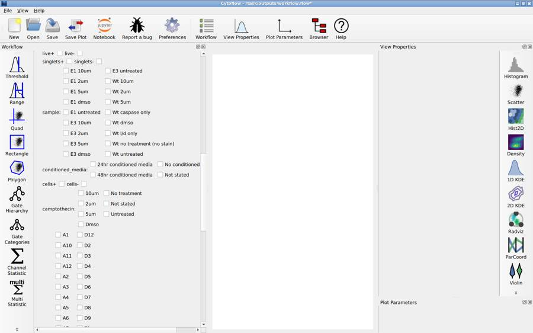
text(await tools.exec_command({cmd:"cu click 166 497 && cu scroll 342 288 up 10 && sleep 1 && cu screenshot /tmp/screen.png","max_output_tokens":1000}));
image((await tools.view_image({path:"/tmp/screen.png"})).image_url);
Script completed Wall time 2.2 seconds Output:
{"chunk_id":"e1ad5a","wall_time_seconds":2.028068393,"exit_code":0,"original_token_count":4,"output":"/tmp/screen.png\n"}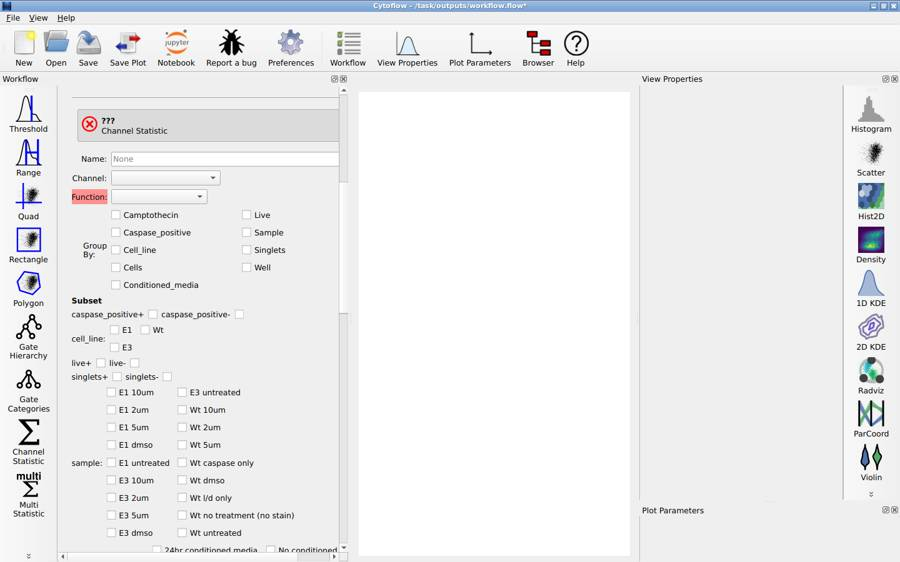
text(await tools.exec_command({cmd:"cu click 289 255 && cu type 'count_gates' && cu click 341 285 && cu key f && cu key Return && cu click 320 315 && cu key Home && cu key Return && cu click 185 371 && cu click 395 344 && cu click 395 400 && cu click 395 428 && sleep 3 && cu click 1393 791 && cu scroll 1393 724 down 4 && cu click 1397 525 && cu click 1061 474 && sleep 2 && cu screenshot /tmp/screen.png","max_output_tokens":1000}));
image((await tools.view_image({path:"/tmp/screen.png"})).image_url);
Script completed Wall time 6.9 seconds Output:
{"chunk_id":"574398","wall_time_seconds":6.721059822,"exit_code":0,"original_token_count":4,"output":"/tmp/screen.png\n"}text(await tools.exec_command({cmd:"cu click 1208 182 && cu key End && cu key Return && sleep 1 && cu click 1184 210 && cu key Home && cu key Return && sleep 1 && cu click 1164 241 && cu screenshot /tmp/screen.png","max_output_tokens":1000}));
image((await tools.view_image({path:"/tmp/screen.png"})).image_url);
Script completed Wall time 2.5 seconds Output:
{"chunk_id":"afe1f2","wall_time_seconds":2.2928658459999998,"exit_code":0,"original_token_count":4,"output":"/tmp/screen.png\n"}text(await tools.exec_command({cmd:"cu click 1136 219 && cu click 1180 270 && cu key s && cu key Return && cu click 1180 301 && cu key l && cu key Return && cu click 1180 330 && cu key c && cu key Return && sleep 3 && cu screenshot /tmp/screen.png","max_output_tokens":1000}));
image((await tools.view_image({path:"/tmp/screen.png"})).image_url);
Script completed Wall time 3.6 seconds Output:
{"chunk_id":"db4362","wall_time_seconds":3.428778523,"exit_code":0,"original_token_count":4,"output":"/tmp/screen.png\n"}text(await tools.exec_command({cmd:"cu click 1180 332 && cu screenshot /tmp/screen.png","max_output_tokens":1000}));
image((await tools.view_image({path:"/tmp/screen.png"})).image_url);
Script completed Wall time 0.2 seconds Output:
{"chunk_id":"dbef54","wall_time_seconds":0.023688106,"exit_code":0,"original_token_count":4,"output":"/tmp/screen.png\n"}text(await tools.exec_command({cmd:"cu key Escape && cu click 1213 391 && sleep 1 && cu paste '/task/outputs/gui_count_gates.csv' && cu click 978 567 && sleep 3 && cu key ctrl+s && cu screenshot /tmp/screen.png","max_output_tokens":1000}));
image((await tools.view_image({path:"/tmp/screen.png"})).image_url);
text(await tools.exec_command({cmd:"head -12 /task/outputs/gui_count_gates.csv","max_output_tokens":2000}));
Script completed Wall time 5.7 seconds Output:
{"chunk_id":"4a3a4d","wall_time_seconds":5.506442183,"exit_code":0,"original_token_count":4,"output":"/tmp/screen.png\n"}{"chunk_id":"ba8b27","wall_time_seconds":0.000004269,"exit_code":0,"original_token_count":112,"output":"None,None,live = False,live = True\nwell = A1,singlets = False,72.0,3719.0\nNone,singlets = True,270.0,17347.0\nwell = A10,singlets = False,39.0,2370.0\nNone,singlets = True,160.0,14911.0\nwell = A11,singlets = False,51.0,3486.0\nNone,singlets = True,174.0,21625.0\nwell = A12,singlets = False,96.0,3260.0\nNone,singlets = True,290.0,25842.0\nwell = A2,singlets = False,67.0,2912.0\nNone,singlets = True,257.0,17476.0\nwell = A3,singlets = False,46.0,3462.0\n"}text(await tools.exec_command({cmd:"cu scroll 322 254 up 20 && sleep 1 && cu screenshot /tmp/screen.png","max_output_tokens":1000}));
image((await tools.view_image({path:"/tmp/screen.png"})).image_url);
Script completed Wall time 3.1 seconds Output:
{"chunk_id":"ab1b98","wall_time_seconds":2.924303847,"exit_code":0,"original_token_count":4,"output":"/tmp/screen.png\n"}text(await tools.exec_command({cmd:"cu click 257 523 && sleep 2 && cu click 1166 225 && cu key Home && cu key Return && sleep 3 && cu screenshot /tmp/screen.png","max_output_tokens":1000}));
image((await tools.view_image({path:"/tmp/screen.png"})).image_url);
Script completed Wall time 5.3 seconds Output:
{"chunk_id":"56b79b","wall_time_seconds":5.165024502,"exit_code":0,"original_token_count":4,"output":"/tmp/screen.png\n"}text(await tools.exec_command({cmd:"cu click 1210 692 && cu click 1210 748 && cu click 1210 776 && cu click 1247 258 && cu key s && cu key Return && sleep 3 && cu screenshot /tmp/screen.png","max_output_tokens":1000}));
image((await tools.view_image({path:"/tmp/screen.png"})).image_url);
Script completed Wall time 3.6 seconds Output:
{"chunk_id":"f38e40","wall_time_seconds":3.374119013,"exit_code":0,"original_token_count":4,"output":"/tmp/screen.png\n"}text(await tools.exec_command({cmd:"cu click 300 641 && cu key ctrl+a && cu type '500' && cu key Tab && sleep 4 && cu screenshot /task/outputs/caspase_controls.png && cu key ctrl+s && cu click 263 783 && sleep 3 && cu screenshot /tmp/screen.png","max_output_tokens":1000}));
image((await tools.view_image({path:"/task/outputs/caspase_controls.png"})).image_url);
image((await tools.view_image({path:"/tmp/screen.png"})).image_url);
Script completed Wall time 7.5 seconds Output:
{"chunk_id":"432f03","wall_time_seconds":7.347461787,"exit_code":0,"original_token_count":13,"output":"/task/outputs/caspase_controls.png\n/tmp/screen.png\n"}text(await tools.exec_command({cmd:"cu click 1238 331 && cu screenshot /tmp/screen.png","max_output_tokens":1000}));
image((await tools.view_image({path:"/tmp/screen.png"})).image_url);
Script completed Wall time 0.2 seconds Output:
{"chunk_id":"2842ac","wall_time_seconds":0.019575867,"exit_code":0,"original_token_count":4,"output":"/tmp/screen.png\n"}text(await tools.exec_command({cmd:"cu click 1181 236 && sleep 3 && cu click 1215 392 && sleep 1 && cu paste '/task/outputs/gui_count_gates.csv' && cu click 978 568 && sleep 1 && cu screenshot /tmp/screen.png","max_output_tokens":1000}));
image((await tools.view_image({path:"/tmp/screen.png"})).image_url);
Script completed Wall time 6.7 seconds Output:
{"chunk_id":"79e3c6","wall_time_seconds":6.572772626,"exit_code":0,"original_token_count":4,"output":"/tmp/screen.png\n"}text(await tools.exec_command({cmd:"cu click 981 569 && sleep 2 && cu screenshot /tmp/screen.png","max_output_tokens":1000}));
image((await tools.view_image({path:"/tmp/screen.png"})).image_url);
Script completed Wall time 2.2 seconds Output:
{"chunk_id":"a99b2b","wall_time_seconds":2.030946842,"exit_code":0,"original_token_count":4,"output":"/tmp/screen.png\n"}text(await tools.exec_command({cmd:"cu click 715 410 && sleep 2 && cu key ctrl+s && head -12 /task/outputs/gui_count_gates.csv","max_output_tokens":2000}));
Script completed
Wall time 2.2 seconds
Output:
{"chunk_id":"ce7f08","wall_time_seconds":1.9874105530000001,"exit_code":0,"original_token_count":158,"output":"None,None,live = False,None,live = True,None\nNone,None,caspase_positive = False,caspase_positive = False,caspase_positive = True,caspase_positive = True\nwell = A1,singlets = False,50.0,22.0,3436.0,283.0\nNone,singlets = True,260.0,10.0,17155.0,192.0\nwell = A10,singlets = False,28.0,11.0,2203.0,167.0\nNone,singlets = True,157.0,3.0,14743.0,168.0\nwell = A11,singlets = False,34.0,17.0,3244.0,242.0\nNone,singlets = True,165.0,9.0,21411.0,214.0\nwell = A12,singlets = False,73.0,23.0,3181.0,79.0\nNone,singlets = True,277.0,13.0,25688.0,154.0\nwell = A2,singlets = False,57.0,10.0,2716.0,196.0\nNone,singlets = True,251.0,6.0,17313.0,163.0\n"}text(await tools.exec_command({cmd:"python - <<'PY'\nimport pandas as pd\np='/task/outputs/'\na=pd.read_csv(p+'gui_count_all.csv',header=None,names=['well','all_events']); a.well=a.well.str.replace('well = ','',regex=False)\ng=pd.read_csv(p+'gui_count_gates.csv',header=None,skiprows=2,names=['well','singlets','dead_neg','dead_pos','live_neg','live_pos'])\ng.well=g.well.replace('None',None).ffill().str.replace('well = ','',regex=False)\ng['cells_count']=g[['dead_neg','dead_pos','live_neg','live_pos']].sum(axis=1)\ns=g[g.singlets=='singlets = True'].copy(); s['singlet_count']=s.cells_count;s['live_count']=s.live_neg+s.live_pos;s['positive_count']=s.live_pos\nr=a.merge(g.groupby('well').cells_count.sum(),on='well').merge(s[['well','singlet_count','live_count','positive_count']],on='well')\nl=pd.read_csv('/task/inputs/plate_layout.csv'); r=l.merge(r,on='well');r['positive_pct']=100*r.positive_count/r.live_count;r['live_pct']=100*r.live_count/r.singlet_count\nr.to_csv(p+'well_metrics_preliminary.csv',index=False)\nprint(r[['well','all_events','cells_count','singlet_count','live_count','positive_count','positive_pct','live_pct']].to_string(index=False))\nprint(r[r.well.str[0]!='G'].groupby(['cell_line','conditioned_media','camptothecin']).positive_pct.agg(['mean','std']).to_string())\nPY","max_output_tokens":8000}));
text(await tools.clock__curr_time({}));
Script completed
Wall time 0.0 seconds
Output:
{"chunk_id":"88c78f","wall_time_seconds":0.000004924,"exit_code":127,"original_token_count":12,"output":"/bin/bash: line 1: python: command not found\n"}
{"current_time":"2026-11-06 00:43:46 UTC"}text(await tools.exec_command({cmd:"python3 - <<'PY'\nimport pandas as pd\np='/task/outputs/'\na=pd.read_csv(p+'gui_count_all.csv',header=None,names=['well','all_events']); a.well=a.well.str.replace('well = ','',regex=False)\ng=pd.read_csv(p+'gui_count_gates.csv',header=None,skiprows=2,names=['well','singlets','dead_neg','dead_pos','live_neg','live_pos'])\ng.well=g.well.replace('None',None).ffill().str.replace('well = ','',regex=False)\ng['cells_count']=g[['dead_neg','dead_pos','live_neg','live_pos']].sum(axis=1)\ns=g[g.singlets=='singlets = True'].copy(); s['singlet_count']=s.cells_count;s['live_count']=s.live_neg+s.live_pos;s['positive_count']=s.live_pos\nr=a.merge(g.groupby('well').cells_count.sum(),on='well').merge(s[['well','singlet_count','live_count','positive_count']],on='well')\nl=pd.read_csv('/task/inputs/plate_layout.csv'); r=l.merge(r,on='well');r['positive_pct']=100*r.positive_count/r.live_count;r['live_pct']=100*r.live_count/r.singlet_count\nr.to_csv(p+'well_metrics_preliminary.csv',index=False)\nprint(r[['well','all_events','cells_count','singlet_count','live_count','positive_count','positive_pct','live_pct']].to_string(index=False))\nprint(r[r.well.str[0]!='G'].groupby(['cell_line','conditioned_media','camptothecin']).positive_pct.agg(['mean','std']).to_string())\nPY","max_output_tokens":7000}));
Script completed
Wall time 0.6 seconds
Output:
{"chunk_id":"9735c7","wall_time_seconds":0.390446168,"exit_code":0,"original_token_count":2563,"output":"well all_events cells_count singlet_count live_count positive_count positive_pct live_pct\n A1 30920.0 21408.0 17617.0 17347.0 192.0 1.106820 98.467389\n A2 31266.0 20712.0 17733.0 17476.0 163.0 0.932708 98.550725\n A3 38748.0 22801.0 19293.0 19090.0 166.0 0.869565 98.947805\n A4 34861.0 32587.0 28576.0 28264.0 151.0 0.534249 98.908175\n A5 14011.0 9725.0 8144.0 7931.0 100.0 1.260875 97.384578\n A6 25118.0 17182.0 14690.0 14500.0 140.0 0.965517 98.706603\n A7 27544.0 17696.0 14993.0 14838.0 116.0 0.781777 98.966184\n A8 30067.0 27913.0 25043.0 24827.0 121.0 0.487373 99.137484\n A9 17224.0 11445.0 9687.0 9611.0 157.0 1.633545 99.215443\n A10 24604.0 17480.0 15071.0 14911.0 168.0 1.126685 98.938358\n A11 38346.0 25336.0 21799.0 21625.0 214.0 0.989595 99.201798\n A12 31708.0 29488.0 26132.0 25842.0 154.0 0.595929 98.890250\n B1 9849.0 4363.0 3544.0 3543.0 210.0 5.927180 99.971783\n B2 10963.0 4992.0 4235.0 4200.0 157.0 3.738095 99.173554\n B3 14921.0 6565.0 5438.0 5429.0 228.0 4.199668 99.834498\n B4 12172.0 10357.0 8990.0 8936.0 299.0 3.346016 99.399333\n B5 5068.0 2428.0 2057.0 2012.0 63.0 3.131213 97.812348\n B6 9638.0 5511.0 4775.0 4717.0 108.0 2.289591 98.785340\n B7 13360.0 6596.0 5750.0 5694.0 147.0 2.581665 99.026087\n B8 11210.0 8994.0 8130.0 7999.0 160.0 2.000250 98.388684\n B9 3505.0 1571.0 1338.0 1312.0 60.0 4.573171 98.056801\n B10 8268.0 4184.0 3736.0 3692.0 170.0 4.604550 98.822270\n B11 10609.0 5354.0 4831.0 4792.0 196.0 4.090150 99.192714\n B12 9382.0 7950.0 7278.0 7194.0 283.0 3.933834 98.845837\n C1 7495.0 4092.0 3429.0 3392.0 182.0 5.365566 98.920968\n C2 10263.0 5962.0 5459.0 5360.0 245.0 4.570896 98.186481\n C3 8563.0 5165.0 4797.0 4719.0 223.0 4.725577 98.373984\n C4 9241.0 6322.0 5944.0 5731.0 288.0 5.025301 96.416555\n C5 3151.0 1528.0 1297.0 1224.0 57.0 4.656863 94.371627\n C6 6099.0 3289.0 2978.0 2909.0 141.0 4.847026 97.683009\n C7 8001.0 4623.0 4237.0 4163.0 247.0 5.933221 98.253481\n C8 8215.0 6088.0 5722.0 5521.0 255.0 4.618728 96.487242\n C9 4067.0 2050.0 1733.0 1663.0 82.0 4.930848 95.960762\n C10 8011.0 4580.0 4192.0 4083.0 228.0 5.584129 97.399809\n C11 9008.0 5376.0 4911.0 4865.0 268.0 5.508736 99.063327\n C12 13163.0 10614.0 10034.0 9849.0 454.0 4.609605 98.156269\n D1 22778.0 14814.0 12649.0 12569.0 149.0 1.185456 99.367539\n D2 27593.0 18186.0 16100.0 16025.0 138.0 0.861154 99.534161\n D3 27824.0 16282.0 14410.0 14274.0 141.0 0.987810 99.056211\n D4 24551.0 23037.0 21194.0 20949.0 168.0 0.801948 98.844012\n D5 6454.0 4661.0 4018.0 3974.0 54.0 1.358832 98.904928\n D6 17066.0 11233.0 9954.0 9855.0 105.0 1.065449 99.005425\n D7 23253.0 14322.0 12842.0 12650.0 121.0 0.956522 98.504906\n D8 23299.0 21699.0 19529.0 19163.0 158.0 0.824506 98.125864\n D9 8616.0 5977.0 5220.0 5156.0 67.0 1.299457 98.773946\n D10 19657.0 13659.0 12090.0 11991.0 151.0 1.259278 99.181141\n D11 31867.0 20817.0 18734.0 18632.0 192.0 1.030485 99.455535\n D12 25256.0 23314.0 21368.0 21164.0 134.0 0.633151 99.045301\n E1 9821.0 2954.0 2578.0 2572.0 97.0 3.771384 99.767261\n E2 10681.0 4910.0 4478.0 4459.0 148.0 3.319130 99.575703\n E3 12311.0 4935.0 4461.0 4431.0 145.0 3.272399 99.327505\n E4 10059.0 8423.0 7781.0 7700.0 318.0 4.129870 98.959003\n E5 4437.0 1632.0 1434.0 1422.0 28.0 1.969058 99.163180\n E6 7547.0 3446.0 3049.0 3019.0 68.0 2.252401 99.016071\n E7 12028.0 5137.0 4594.0 4562.0 116.0 2.542744 99.303439\n E8 7979.0 6144.0 5620.0 5541.0 136.0 2.454431 98.594306\n E9 4147.0 1435.0 1214.0 1199.0 43.0 3.586322 98.764415\n E10 5492.0 2489.0 2228.0 2211.0 150.0 6.784261 99.236984\n E11
… [4,522 more characters not shown]text(await tools.exec_command({cmd:"cu click 1392 174 && sleep 1 && cu screenshot /tmp/screen.png","max_output_tokens":1000}));
image((await tools.view_image({path:"/tmp/screen.png"})).image_url);
Script completed Wall time 1.2 seconds Output:
{"chunk_id":"b75aeb","wall_time_seconds":1.027208744,"exit_code":0,"original_token_count":4,"output":"/tmp/screen.png\n"}text(await tools.exec_command({cmd:"cu click 1265 181 && cu key End && cu key Return && sleep 3 && cu screenshot /tmp/screen.png","max_output_tokens":1000}));
image((await tools.view_image({path:"/tmp/screen.png"})).image_url);
Script completed Wall time 3.2 seconds Output:
{"chunk_id":"7e5965","wall_time_seconds":3.056607539,"exit_code":0,"original_token_count":4,"output":"/tmp/screen.png\n"}text(await tools.exec_command({cmd:"cu click 46 890 && cu scroll 80 750 down 5 && cu screenshot /tmp/screen.png","max_output_tokens":1000}));
image((await tools.view_image({path:"/tmp/screen.png"})).image_url);
Script completed Wall time 0.7 seconds Output:
{"chunk_id":"97aecc","wall_time_seconds":0.535391859,"exit_code":0,"original_token_count":4,"output":"/tmp/screen.png\n"}text(await tools.exec_command({cmd:"cu click 129 482 && sleep 2 && cu scroll 335 792 down 8 && sleep 1 && cu screenshot /tmp/screen.png","max_output_tokens":1000}));
image((await tools.view_image({path:"/tmp/screen.png"})).image_url);
Script completed Wall time 4.0 seconds Output:
{"chunk_id":"fecbed","wall_time_seconds":3.8391398580000002,"exit_code":0,"original_token_count":4,"output":"/tmp/screen.png\n"}text(await tools.exec_command({cmd:"cu click 319 755 && cu type 'time_bin' && cu click 348 786 && cu key End && cu key Return && cu click 317 846 && cu type '500' && cu key Tab && sleep 3 && cu screenshot /tmp/screen.png","max_output_tokens":1000}));
image((await tools.view_image({path:"/tmp/screen.png"})).image_url);
Script completed Wall time 3.7 seconds Output:
{"chunk_id":"dc65de","wall_time_seconds":3.568164521,"exit_code":0,"original_token_count":4,"output":"/tmp/screen.png\n"}text(await tools.exec_command({cmd:"cu click 45 696 && sleep 2 && cu scroll 332 787 down 5 && sleep 1 && cu screenshot /tmp/screen.png","max_output_tokens":1000}));
image((await tools.view_image({path:"/tmp/screen.png"})).image_url);
Script completed Wall time 3.7 seconds Output:
{"chunk_id":"1d0889","wall_time_seconds":3.53120917,"exit_code":0,"original_token_count":4,"output":"/tmp/screen.png\n"}text(await tools.exec_command({cmd:"cu click 296 551 && cu type 'count_time' && cu click 341 582 && cu key f && cu key Return && cu click 320 612 && cu key Home && cu key Return && cu click 395 725 && cu click 395 752 && sleep 3 && cu click 1393 791 && cu scroll 1393 724 down 4 && cu click 1397 525 && cu click 1061 474 && sleep 1 && cu click 1208 182 && cu key End && cu key Return && sleep 1 && cu click 1184 210 && cu key Home && cu key Return && sleep 1 && cu screenshot /tmp/screen.png","max_output_tokens":1000}));
image((await tools.view_image({path:"/tmp/screen.png"})).image_url);
Script completed Wall time 7.9 seconds Output:
{"chunk_id":"95c5ea","wall_time_seconds":7.764243903,"exit_code":0,"original_token_count":4,"output":"/tmp/screen.png\n"}text(await tools.exec_command({cmd:"cu click 1186 241 && cu key w && cu key Return && cu click 1186 301 && cu key t && cu key Return && sleep 3 && cu click 1215 392 && sleep 1 && cu paste '/task/outputs/gui_count_time.csv' && cu click 979 568 && sleep 2 && cu screenshot /tmp/screen.png","max_output_tokens":1000}));
image((await tools.view_image({path:"/tmp/screen.png"})).image_url);
text(await tools.exec_command({cmd:"head -4 /task/outputs/gui_count_time.csv","max_output_tokens":2000}));
Script completed Wall time 7.9 seconds Output:
{"chunk_id":"326738","wall_time_seconds":7.734971309,"exit_code":0,"original_token_count":4,"output":"/tmp/screen.png\n"}{"chunk_id":"4b7b6d","wall_time_seconds":0.000003362,"exit_code":0,"original_token_count":326,"output":"None,time_bin = 0.0,time_bin = 500.0,time_bin = 1000.0,time_bin = 1500.0,time_bin = 2000.0,time_bin = 2500.0,time_bin = 3000.0,time_bin = 3500.0,time_bin = 4000.0,time_bin = 4500.0,time_bin = 5000.0,time_bin = 5500.0,time_bin = 6000.0,time_bin = 6500.0,time_bin = 7000.0,time_bin = 7500.0,time_bin = 8000.0,time_bin = 8500.0,time_bin = 9000.0,time_bin = 9500.0,time_bin = 10000.0,time_bin = 10500.0,time_bin = 11000.0,time_bin = 11500.0,time_bin = 12000.0,time_bin = 12500.0,time_bin = 13000.0,time_bin = 13500.0,time_bin = 14000.0,time_bin = 14500.0,time_bin = 15000.0,time_bin = 15500.0,time_bin = 16000.0,time_bin = 16500.0\nwell = A1,703.0,860.0,850.0,840.0,921.0,951.0,971.0,925.0,889.0,913.0,888.0,849.0,878.0,874.0,892.0,982.0,1064.0,1137.0,1187.0,1240.0,1227.0,1196.0,1101.0,985.0,1001.0,975.0,873.0,853.0,787.0,795.0,770.0,652.0,597.0,294.0\nwell = A10,582.0,647.0,708.0,675.0,703.0,742.0,773.0,775.0,687.0,708.0,709.0,717.0,731.0,748.0,753.0,843.0,961.0,861.0,891.0,895.0,960.0,917.0,866.0,844.0,714.0,656.0,675.0,630.0,601.0,606.0,558.0,569.0,703.0,196.0\nwell = A11,986.0,1012.0,1013.0,1106.0,1097.0,1134.0,1601.0,1735.0,1072.0,1068.0,1134.0,1152.0,1082.0,1081.0,1165.0,1418.0,1394.0,1372.0,1398.0,1403.0,1442.0,1419.0,1301.0,1162.0,1122.0,1070.0,1063.0,941.0,949.0,948.0,837.0,951.0,718.0,None\n"}text(await tools.exec_command({cmd:"python3 - <<'PY'\nimport pandas as pd,numpy as np\nimport matplotlib; matplotlib.use('Agg')\nimport matplotlib.pyplot as plt\np='/task/outputs/'\nd=pd.read_csv(p+'gui_count_time.csv',index_col=0,na_values=['None']).fillna(0);d.index=d.index.str.replace('well = ','',regex=False);d.columns=[float(c.split(' = ')[1]) for c in d.columns]\na=pd.read_csv(p+'gui_count_all.csv',header=None,index_col=0).iloc[:,0];a.index=a.index.str.replace('well = ','',regex=False)\nprint('Time totals match:',np.all(d.sum(axis=1).sort_index().values==a.sort_index().values))\nrows=[]\nfor w,s in d.iterrows():\n v=s.values;end=np.nonzero(v)[0][-1];core=v[1:end]; base=np.median(core);rows.append((w,end*500,base,core.min()/base,core.max()/base,np.mean(core[-4:])/np.mean(core[:4]),int((core==0).sum())))\nr=pd.DataFrame(rows,columns=['well','last_time_bin','median_full_bin_count','min_over_median','max_over_median','late_early_ratio','internal_empty_bins']);r.to_csv(p+'time_qc.csv',index=False);print(r.sort_values('min_over_median').head(15).to_string(index=False));print(r.sort_values('late_early_ratio').head(10).to_string(index=False))\nfig,axs=plt.subplots(7,12,figsize=(24,14),sharex=True)\nfor ax in axs.flat:ax.set_visible(False)\nfor w,s in d.iterrows():\n ax=axs[ord(w[0])-65,int(w[1:])-1];ax.set_visible(True);ax.plot(d.columns,s.values,lw=0.8);ax.set_title(w,fontsize=9);ax.tick_params(labelsize=6);ax.set_ylim(bottom=0)\nfig.suptitle('All-event counts in 500-unit native Time bins; GUI-exported counts',fontsize=16);fig.tight_layout();fig.savefig(p+'time_qc.png',dpi=160)\nPY","max_output_tokens":3000}));
image((await tools.view_image({path:"/task/outputs/time_qc.png"})).image_url);
Script completed Wall time 5.5 seconds Output:
{"chunk_id":"74367e","wall_time_seconds":5.267978084,"exit_code":0,"original_token_count":789,"output":"Time totals match: True\nwell last_time_bin median_full_bin_count min_over_median max_over_median late_early_ratio internal_empty_bins\n C12 16500 404.0 0.022277 1.428218 0.588896 0\n G6 16000 504.0 0.033730 1.468254 0.712601 0\n D1 16500 713.0 0.046283 1.450210 0.637747 0\n F12 16000 363.0 0.052342 1.672176 0.622413 0\n C8 16000 254.0 0.070866 1.448819 0.828859 0\n F8 16500 316.5 0.075829 1.500790 0.651899 0\n E10 16500 170.5 0.087977 1.390029 1.581948 0\n C2 16500 317.5 0.097638 1.351181 0.716443 0\n F4 16000 325.0 0.098462 1.686154 0.810833 0\n C10 16000 256.0 0.101562 1.363281 0.804373 0\n B8 16500 336.0 0.104167 1.449405 0.739403 0\n A12 16500 956.5 0.117094 1.393623 0.707167 0\n D5 16000 201.0 0.134328 1.462687 0.791608 0\n D7 16000 751.0 0.138482 1.294274 0.741122 0\n B10 16500 251.0 0.147410 1.338645 0.737805 0\nwell last_time_bin median_full_bin_count min_over_median max_over_median late_early_ratio internal_empty_bins\n A2 16500 962.0 0.375260 1.341996 0.549936 0\n C12 16500 404.0 0.022277 1.428218 0.588896 0\n F12 16000 363.0 0.052342 1.672176 0.622413 0\n D1 16500 713.0 0.046283 1.450210 0.637747 0\n F8 16500 316.5 0.075829 1.500790 0.651899 0\n A9 16500 528.5 0.363292 1.246925 0.687384 0\n A12 16500 956.5 0.117094 1.393623 0.707167 0\n G6 16000 504.0 0.033730 1.468254 0.712601 0\n C2 16500 317.5 0.097638 1.351181 0.716443 0\n E12 15500 333.0 0.627628 1.480480 0.733136 0\n"}text(await tools.exec_command({cmd:"cu click 47 694 && sleep 2 && cu scroll 331 790 down 6 && sleep 1 && cu screenshot /tmp/screen.png","max_output_tokens":1000}));
image((await tools.view_image({path:"/tmp/screen.png"})).image_url);
Script completed Wall time 3.8 seconds Output:
{"chunk_id":"85ecd7","wall_time_seconds":3.6284394239999997,"exit_code":0,"original_token_count":4,"output":"/tmp/screen.png\n"}text(await tools.exec_command({cmd:"cu click 292 262 && cu type 'mean_BL1_live' && cu click 341 293 && cu key Home && cu key Return && cu click 320 323 && cu key m && cu key Return && cu click 395 464 && cu click 161 618 && cu click 187 641 && cu scroll 328 791 down 5 && sleep 2 && cu screenshot /tmp/screen.png","max_output_tokens":1000}));
image((await tools.view_image({path:"/tmp/screen.png"})).image_url);
Script completed Wall time 3.6 seconds Output:
{"chunk_id":"3ee2e0","wall_time_seconds":3.444801364,"exit_code":0,"original_token_count":4,"output":"/tmp/screen.png\n"}text(await tools.exec_command({cmd:"cu click 166 661 && sleep 3 && cu click 1393 791 && cu scroll 1393 724 down 4 && cu click 1397 525 && cu click 1061 474 && sleep 1 && cu click 1208 182 && cu key End && cu key Return && sleep 1 && cu click 1184 210 && cu key Home && cu key Return && sleep 1 && cu click 1186 241 && cu key w && cu key Return && sleep 2 && cu screenshot /tmp/screen.png","max_output_tokens":1000}));
image((await tools.view_image({path:"/tmp/screen.png"})).image_url);
Script completed Wall time 9.3 seconds Output:
{"chunk_id":"149d34","wall_time_seconds":9.15775067,"exit_code":0,"original_token_count":4,"output":"/tmp/screen.png\n"}text(await tools.exec_command({cmd:"cu click 1164 241 && cu key w && cu key Return && sleep 2 && cu click 1215 392 && sleep 1 && cu paste '/task/outputs/gui_mean_BL1_live.csv' && cu click 979 568 && sleep 2 && cu key ctrl+s && cu scroll 326 281 up 6 && sleep 1 && cu screenshot /tmp/screen.png","max_output_tokens":1000}));
image((await tools.view_image({path:"/tmp/screen.png"})).image_url);
text(await tools.exec_command({cmd:"head -6 /task/outputs/gui_mean_BL1_live.csv","max_output_tokens":1000}));
Script completed Wall time 8.5 seconds Output:
{"chunk_id":"987aca","wall_time_seconds":8.231806207,"exit_code":0,"original_token_count":4,"output":"/tmp/screen.png\n"}{"chunk_id":"802394","wall_time_seconds":0.000005696,"exit_code":0,"original_token_count":44,"output":"well = A1,194.44716665705886\nwell = A10,201.5222319093287\nwell = A11,195.01206936416185\nwell = A12,173.61067254856437\nwell = A2,190.27798123140306\nwell = A3,189.31257202723938\n"}text(await tools.exec_command({cmd:"cu click 47 694 && sleep 2 && cu scroll 331 790 down 3 && sleep 1 && cu screenshot /tmp/screen.png","max_output_tokens":1000}));
image((await tools.view_image({path:"/tmp/screen.png"})).image_url);
Script completed Wall time 3.5 seconds Output:
{"chunk_id":"7c784f","wall_time_seconds":3.327749587,"exit_code":0,"original_token_count":4,"output":"/tmp/screen.png\n"}text(await tools.exec_command({cmd:"cu click 291 162 && cu type 'count_positive' && cu click 341 192 && cu key f && cu key Return && cu click 320 223 && cu key Home && cu key Return && cu click 395 363 && cu click 244 441 && cu click 161 518 && cu click 187 541 && cu click 166 871 && sleep 3 && cu click 1393 791 && cu scroll 1393 724 down 4 && cu click 1397 525 && cu click 1061 474 && sleep 1 && cu click 1208 182 && cu key c && cu screenshot /tmp/screen.png","max_output_tokens":1000}));
image((await tools.view_image({path:"/tmp/screen.png"})).image_url);
Script completed Wall time 6.2 seconds Output:
{"chunk_id":"747c85","wall_time_seconds":6.024617475,"exit_code":0,"original_token_count":4,"output":"/tmp/screen.png\n"}text(await tools.exec_command({cmd:"cu click 1171 255 && sleep 1 && cu click 1183 211 && cu key Home && cu key Return && sleep 1 && cu click 1164 241 && cu key w && cu key Return && sleep 2 && cu click 1215 392 && sleep 1 && cu paste '/task/outputs/gui_count_positive.csv' && cu click 979 568 && sleep 2 && cu key ctrl+s && cu screenshot /tmp/screen.png","max_output_tokens":1000}));
image((await tools.view_image({path:"/tmp/screen.png"})).image_url);
text(await tools.exec_command({cmd:"python3 - <<'PY'\nimport pandas as pd\np='/task/outputs/'\na=pd.read_csv(p+'gui_count_positive.csv',header=None,names=['well','count']);a.well=a.well.str.replace('well = ','',regex=False)\nb=pd.read_csv(p+'well_metrics_preliminary.csv');r=a.merge(b,on='well'); print('Direct marker counts agree with cross-tabulation:',(r['count']==r.positive_count).all()); print(r[['well','count','positive_count']].tail(6).to_string(index=False))\nPY","max_output_tokens":1000}));
Script completed Wall time 9.3 seconds Output:
{"chunk_id":"2fab85","wall_time_seconds":8.872181229,"exit_code":0,"original_token_count":4,"output":"/tmp/screen.png\n"}{"chunk_id":"9059d2","wall_time_seconds":0.134897986,"exit_code":0,"original_token_count":63,"output":"Direct marker counts agree with cross-tabulation: True\nwell count positive_count\n G1 112.0 112.0\n G2 98.0 98.0\n G3 186.0 186.0\n G4 247.0 247.0\n G5 476.0 476.0\n G6 139.0 139.0\n"}text(await tools.exec_command({cmd:"cu scroll 1249 734 down 22 && sleep 1 && cu screenshot /tmp/screen.png","max_output_tokens":1000}));
image((await tools.view_image({path:"/tmp/screen.png"})).image_url);
Script completed Wall time 3.3 seconds Output:
{"chunk_id":"34cb31","wall_time_seconds":3.128542639,"exit_code":0,"original_token_count":4,"output":"/tmp/screen.png\n"}text(await tools.exec_command({cmd:"cu click 1394 246 && cu scroll 1251 303 up 35 && sleep 1 && cu screenshot /tmp/screen.png","max_output_tokens":1000}));
image((await tools.view_image({path:"/tmp/screen.png"})).image_url);
Script completed Wall time 4.7 seconds Output:
{"chunk_id":"1bd65f","wall_time_seconds":4.536160104,"exit_code":0,"original_token_count":4,"output":"/tmp/screen.png\n"}text(await tools.exec_command({cmd:"cu scroll 1339 283 up 30 && sleep 1 && cu screenshot /tmp/screen.png","max_output_tokens":1000}));
image((await tools.view_image({path:"/tmp/screen.png"})).image_url);
Script completed Wall time 4.1 seconds Output:
{"chunk_id":"bdd9be","wall_time_seconds":3.930830159,"exit_code":0,"original_token_count":4,"output":"/tmp/screen.png\n"}text(await tools.exec_command({cmd:"cu click 1296 181 && cu key End && cu key Return && cu click 1296 241 && cu key f && cu key Return && cu click 1270 371 && cu key Home && cu key Return && cu click 1270 481 && cu key w && cu key Return && sleep 3 && cu screenshot /tmp/screen.png","max_output_tokens":1000}));
image((await tools.view_image({path:"/tmp/screen.png"})).image_url);
Script completed Wall time 3.6 seconds Output:
{"chunk_id":"68963a","wall_time_seconds":3.472028831,"exit_code":0,"original_token_count":4,"output":"/tmp/screen.png\n"}text(await tools.exec_command({cmd:"cu click 1270 371 && cu key End && cu key Return && cu click 1270 481 && cu key End && cu key Return && cu scroll 1339 708 down 12 && sleep 2 && cu screenshot /tmp/screen.png","max_output_tokens":1000}));
image((await tools.view_image({path:"/tmp/screen.png"})).image_url);
Script completed Wall time 3.6 seconds Output:
{"chunk_id":"535a21","wall_time_seconds":3.4088418369999998,"exit_code":0,"original_token_count":4,"output":"/tmp/screen.png\n"}text(await tools.exec_command({cmd:"cu click 1134 661 && sleep 3 && cu screenshot /task/outputs/E10_time_scatter.png","max_output_tokens":1000}));
image((await tools.view_image({path:"/task/outputs/E10_time_scatter.png"})).image_url);
Script completed Wall time 3.2 seconds Output:
{"chunk_id":"f49dc3","wall_time_seconds":3.036526937,"exit_code":0,"original_token_count":9,"output":"/task/outputs/E10_time_scatter.png\n"}text(await tools.exec_command({cmd:"cu scroll 548 254 up 30 && sleep 1 && cu screenshot /tmp/screen.png","max_output_tokens":1000}));
image((await tools.view_image({path:"/tmp/screen.png"})).image_url);
Script completed Wall time 4.1 seconds Output:
{"chunk_id":"bc27c2","wall_time_seconds":3.939102306,"exit_code":0,"original_token_count":4,"output":"/tmp/screen.png\n"}text(await tools.exec_command({cmd:"cu click 269 696 && sleep 1 && cu click 1393 791 && cu scroll 1393 724 down 4 && cu click 1397 525 && cu click 1061 474 && cu scroll 1339 283 up 40 && sleep 2 && cu screenshot /tmp/screen.png","max_output_tokens":1000}));
image((await tools.view_image({path:"/tmp/screen.png"})).image_url);
Script completed Wall time 7.9 seconds Output:
{"chunk_id":"996a39","wall_time_seconds":7.75874335,"exit_code":0,"original_token_count":4,"output":"/tmp/screen.png\n"}text(await tools.exec_command({cmd:"cu scroll 1339 705 down 30 && sleep 1 && cu screenshot /tmp/screen.png","max_output_tokens":1000}));
image((await tools.view_image({path:"/tmp/screen.png"})).image_url);
Script completed Wall time 4.1 seconds Output:
{"chunk_id":"7e6351","wall_time_seconds":3.92706616,"exit_code":0,"original_token_count":4,"output":"/tmp/screen.png\n"}text(await tools.exec_command({cmd:"cu click 1134 530 && cu click 1134 558 && cu click 1134 586 && cu click 1134 614 && cu click 1134 642 && cu click 1134 670 && sleep 3 && cu screenshot /task/outputs/gui_control_counts.png","max_output_tokens":1000}));
image((await tools.view_image({path:"/task/outputs/gui_control_counts.png"})).image_url);
Script completed Wall time 3.7 seconds Output:
{"chunk_id":"0d18e5","wall_time_seconds":3.546726089,"exit_code":0,"original_token_count":10,"output":"/task/outputs/gui_control_counts.png\n"}text(await tools.exec_command({cmd:"cu click 1134 574 && sleep 2 && cu screenshot /tmp/screen.png","max_output_tokens":1000}));
image((await tools.view_image({path:"/tmp/screen.png"})).image_url);
Script completed Wall time 2.2 seconds Output:
{"chunk_id":"418a39","wall_time_seconds":2.026289712,"exit_code":0,"original_token_count":4,"output":"/tmp/screen.png\n"}text(await tools.exec_command({cmd:"cu click 1134 652 && cu click 1134 680 && cu click 1134 708 && cu click 1134 736 && cu click 555 70 && cu click 653 70 && sleep 3 && cu screenshot /task/outputs/gui_control_counts.png","max_output_tokens":1000}));
image((await tools.view_image({path:"/task/outputs/gui_control_counts.png"})).image_url);
Script completed Wall time 3.7 seconds Output:
{"chunk_id":"11a437","wall_time_seconds":3.54355366,"exit_code":0,"original_token_count":10,"output":"/task/outputs/gui_control_counts.png\n"}text(await tools.exec_command({cmd:"cu click 770 70 && sleep 2 && cu screenshot /task/outputs/gui_control_counts.png && cu key ctrl+s","max_output_tokens":1000}));
image((await tools.view_image({path:"/task/outputs/gui_control_counts.png"})).image_url);
Script completed Wall time 2.2 seconds Output:
{"chunk_id":"00aa95","wall_time_seconds":2.045348839,"exit_code":0,"original_token_count":10,"output":"/task/outputs/gui_control_counts.png\n"}text(await tools.exec_command({cmd:"python3 - <<'PY'\nimport pandas as pd\np='/task/outputs/'\nm=pd.read_csv(p+'gui_mean_BL1_live.csv',header=None,names=['well','mean_BL1']);m.well=m.well.str.replace('well = ','',regex=False)\nr=pd.read_csv(p+'well_metrics_preliminary.csv').merge(m,on='well');r.to_csv(p+'well_metrics.csv',index=False)\nprint(r[r.well.str[0]=='G'][['well','mean_BL1','positive_pct']].to_string(index=False))\nprint(r[r.well.str[0]!='G'].groupby(['cell_line','conditioned_media','camptothecin']).mean_BL1.agg(['mean','std']).to_string())\nt=pd.read_csv(p+'gui_count_time.csv',index_col=0,na_values=['None']).fillna(0);print('E10 time bins',t.loc['well = E10'].to_string())\nPY","max_output_tokens":4000}));
Script completed
Wall time 0.3 seconds
Output:
{"chunk_id":"738b30","wall_time_seconds":0.154391453,"exit_code":0,"original_token_count":950,"output":"well mean_BL1 positive_pct\n G1 146.237323 0.436528\n G2 155.761128 0.435769\n G3 182.231908 0.868428\n G4 266.809807 4.077926\n G5 265.369573 5.756440\n G6 192.574818 1.021083\n mean std\ncell_line conditioned_media camptothecin \nE1 24hr conditioned media 10uM 279.769556 7.299969\n 2uM 271.255063 3.743729\n 5uM 268.772681 1.172026\n DMSO 263.291371 13.240794\n 48hr conditioned media 10uM 271.533848 1.393198\n 2uM 258.597226 8.063204\n 5uM 261.451709 11.293234\n DMSO 249.747333 11.420656\n No conditioned media 10uM 281.388239 16.133709\n 2uM 273.774466 6.849504\n 5uM 284.851090 13.297983\n DMSO 265.791619 6.319909\nE3 24hr conditioned media 10uM 270.275111 0.900904\n 2uM 266.480164 13.801962\n 5uM 260.534657 4.791114\n DMSO 257.169332 2.610149\n 48hr conditioned media 10uM 262.812500 4.154252\n 2uM 273.819880 5.391594\n 5uM 273.586835 12.028401\n DMSO 260.512822 11.371929\n No conditioned media 10uM 284.553032 5.166762\n 2uM 278.289596 6.811448\n 5uM 276.509489 5.194193\n DMSO 258.188006 5.444725\nWT 24hr conditioned media 10uM 200.054477 7.929934\n 2uM 197.355109 11.373865\n 5uM 194.018554 5.289968\n DMSO 180.772023 13.933259\n 48hr conditioned media 10uM 210.136668 5.311978\n 2uM 199.047653 11.435140\n 5uM 197.594581 9.978049\n DMSO 181.103423 11.752304\n No conditioned media 10uM 219.210194 8.944643\n 2uM 202.310296 10.321251\n 5uM 207.807859 8.889220\n DMSO 179.577686 8.438631\nE10 time bins time_bin = 0.0 0.0\ntime_bin = 500.0 15.0\ntime_bin = 1000.0 109.0\ntime_bin = 1500.0 148.0\ntime_bin = 2000.0 149.0\ntime_bin = 2500.0 154.0\ntime_bin = 3000.0 161.0\ntime_bin = 3500.0 184.0\ntime_bin = 4000.0 167.0\ntime_bin = 4500.0 152.0\ntime_bin = 5000.0 163.0\ntime_bin = 5500.0 169.0\ntime_bin = 6000.0 171.0\ntime_bin = 6500.0 202.0\ntime_bin = 7000.0 180.0\ntime_bin = 7500.0 218.0\ntime_bin = 8000.0 209.0\ntime_bin = 8500.0 237.0\ntime_bin = 9000.0 220.0\ntime_bin = 9500.0 232.0\ntime_bin = 10000.0 206.0\ntime_bin = 10500.0 173.0\ntime_bin = 11000.0 213.0\ntime_bin = 11500.0 182.0\ntime_bin = 12000.0 170.0\ntime_bin = 12500.0 173.0\ntime_bin = 13000.0 179.0\ntime_bin = 13500.0 149.0\ntime_bin = 14000.0 138.0\ntime_bin = 14500.0 163.0\ntime_bin = 15000.0 169.0\ntime_bin = 15500.0 201.0\ntime_bin = 16000.0 133.0\ntime_bin = 16500.0 3.0\n"}text(await tools.exec_command({cmd:"cu click 555 70 && cu click 653 70 && cu click 770 70 && cu scroll 548 788 down 40 && sleep 1 && cu screenshot /tmp/screen.png","max_output_tokens":1000}));
image((await tools.view_image({path:"/tmp/screen.png"})).image_url);
Script completed Wall time 5.4 seconds Output:
{"chunk_id":"4eb71a","wall_time_seconds":5.243315648,"exit_code":0,"original_token_count":4,"output":"/tmp/screen.png\n"}text(await tools.exec_command({cmd:"cu click 770 70 && cu click 273 824 && sleep 1 && cu click 46 174 && sleep 2 && cu scroll 548 789 down 20 && sleep 1 && cu screenshot /tmp/screen.png","max_output_tokens":1000}));
image((await tools.view_image({path:"/tmp/screen.png"})).image_url);
Script completed Wall time 6.4 seconds Output:
{"chunk_id":"c196a5","wall_time_seconds":6.243884583,"exit_code":0,"original_token_count":4,"output":"/tmp/screen.png\n"}text(await tools.exec_command({cmd:"cu click 301 786 && cu type 'caspase_400' && cu click 350 816 && cu key Home && cu key Return && cu click 303 846 && cu type '400' && cu key Tab && sleep 4 && cu click 46 174 && sleep 2 && cu scroll 548 789 down 20 && sleep 1 && cu screenshot /tmp/screen.png","max_output_tokens":1000}));
image((await tools.view_image({path:"/tmp/screen.png"})).image_url);
Script completed Wall time 9.9 seconds Output:
{"chunk_id":"6f5bc5","wall_time_seconds":9.758777263,"exit_code":0,"original_token_count":4,"output":"/tmp/screen.png\n"}text(await tools.exec_command({cmd:"cu click 301 786 && cu type 'caspase_600' && cu click 350 816 && cu key Home && cu key Return && cu click 303 846 && cu type '600' && cu key Tab && sleep 4 && cu click 47 694 && sleep 2 && cu scroll 548 788 down 6 && sleep 1 && cu screenshot /tmp/screen.png","max_output_tokens":1000}));
image((await tools.view_image({path:"/tmp/screen.png"})).image_url);
Script completed Wall time 8.5 seconds Output:
{"chunk_id":"e5250a","wall_time_seconds":8.355938176,"exit_code":0,"original_token_count":4,"output":"/tmp/screen.png\n"}text(await tools.exec_command({cmd:"cu click 301 519 && cu type 'count_sensitivity' && cu click 341 550 && cu key f && cu key Return && cu click 320 581 && cu key Home && cu key Return && cu click 185 637 && cu click 185 665 && cu click 395 749 && cu scroll 548 787 down 7 && sleep 2 && cu screenshot /tmp/screen.png","max_output_tokens":1000}));
image((await tools.view_image({path:"/tmp/screen.png"})).image_url);
Script completed Wall time 3.9 seconds Output:
{"chunk_id":"f622ab","wall_time_seconds":3.7472448739999997,"exit_code":0,"original_token_count":4,"output":"/tmp/screen.png\n"}text(await tools.exec_command({cmd:"cu click 161 467 && cu click 187 489 && cu click 166 863 && sleep 3 && cu click 1393 890 && cu scroll 1393 724 down 4 && cu screenshot /tmp/screen.png","max_output_tokens":1000}));
image((await tools.view_image({path:"/tmp/screen.png"})).image_url);
Script completed Wall time 3.9 seconds Output:
{"chunk_id":"498db4","wall_time_seconds":3.7494396290000003,"exit_code":0,"original_token_count":4,"output":"/tmp/screen.png\n"}text(await tools.exec_command({cmd:"cu click 1397 455 && cu click 1061 474 && sleep 1 && cu click 1208 182 && cu screenshot /tmp/screen.png","max_output_tokens":1000}));
image((await tools.view_image({path:"/tmp/screen.png"})).image_url);
Script completed Wall time 1.4 seconds Output:
{"chunk_id":"24f104","wall_time_seconds":1.23631967,"exit_code":0,"original_token_count":4,"output":"/tmp/screen.png\n"}text(await tools.exec_command({cmd:"cu click 1172 277 && sleep 1 && cu click 1183 211 && cu key Home && cu key Return && sleep 1 && cu click 1210 241 && cu key w && cu key Return && sleep 1 && cu screenshot /tmp/screen.png","max_output_tokens":1000}));
image((await tools.view_image({path:"/tmp/screen.png"})).image_url);
Script completed Wall time 3.5 seconds Output:
{"chunk_id":"837d3f","wall_time_seconds":3.303638923,"exit_code":0,"original_token_count":4,"output":"/tmp/screen.png\n"}text(await tools.exec_command({cmd:"cu click 1213 301 && cu key Home && cu key Return && cu click 1213 331 && cu key Home && cu key Down && cu key Return && sleep 2 && cu click 1215 392 && sleep 1 && cu paste '/task/outputs/gui_count_sensitivity.csv' && cu click 979 568 && sleep 2 && cu key ctrl+s && cu screenshot /tmp/screen.png","max_output_tokens":1000}));
image((await tools.view_image({path:"/tmp/screen.png"})).image_url);
text(await tools.exec_command({cmd:"head -7 /task/outputs/gui_count_sensitivity.csv","max_output_tokens":1000}));
Script completed Wall time 7.0 seconds Output:
{"chunk_id":"5f61df","wall_time_seconds":6.780232753,"exit_code":0,"original_token_count":4,"output":"/tmp/screen.png\n"}{"chunk_id":"1dcf03","wall_time_seconds":0.000004016,"exit_code":0,"original_token_count":78,"output":"None,caspase_400 = False,None,caspase_400 = True,None\nNone,caspase_600 = False,caspase_600 = False,caspase_600 = True,caspase_600 = True\nwell = A1,16431.0,None,879.0,37.0\nwell = A10,14024.0,None,856.0,31.0\nwell = A11,20514.0,None,1081.0,30.0\nwell = A12,25138.0,None,661.0,43.0\nwell = A2,16635.0,None,821.0,20.0\n"}text(await tools.exec_command({cmd:"python3 - <<'PY'\nimport pandas as pd,numpy as np\np='/task/outputs/'\ns=pd.read_csv(p+'gui_count_sensitivity.csv',header=None,skiprows=2,na_values=['None'],names=['well','below400','impossible','mid','above600']).fillna(0);s.well=s.well.str.replace('well = ','',regex=False)\nr=pd.read_csv(p+'well_metrics.csv').merge(s,on='well'); assert (r.below400+r.impossible+r.mid+r.above600==r.live_count).all();assert (r.impossible==0).all();r['caspase_400_count']=r.mid+r.above600;r['caspase_600_count']=r.above600;r['pct400']=100*r.caspase_400_count/r.live_count;r['pct600']=100*r.caspase_600_count/r.live_count\nassert (r.caspase_400_count>=r.positive_count).all() and (r.positive_count>=r.caspase_600_count).all()\nr.drop(columns=['below400','impossible','mid','above600']).to_csv(p+'well_metrics.csv',index=False)\nprint(r[r.well.str.startswith('G')][['well','pct400','positive_pct','pct600']].to_string(index=False))\nx=r[r.well.str[0]!='G'].groupby(['cell_line','conditioned_media','camptothecin'])[['pct400','positive_pct','pct600']].mean();print(x.to_string())\nPY","max_output_tokens":4000}));
Script completed
Wall time 0.3 seconds
Output:
{"chunk_id":"ae8722","wall_time_seconds":0.151078149,"exit_code":0,"original_token_count":836,"output":"well pct400 positive_pct pct600\n G1 1.555131 0.436528 0.093542\n G2 1.734181 0.435769 0.097826\n G3 3.571762 0.868428 0.149407\n G4 13.620604 4.077926 0.908040\n G5 15.104608 5.756440 1.801911\n G6 3.930067 1.021083 0.249761\n pct400 positive_pct pct600\ncell_line conditioned_media camptothecin \nE1 24hr conditioned media 10uM 17.925419 4.849282 0.962366\n 2uM 14.223781 3.736034 0.752965\n 5uM 13.895025 3.528613 0.751682\n DMSO 12.739719 3.737943 0.813958\n 48hr conditioned media 10uM 12.941829 2.550135 0.515263\n 2uM 10.487631 2.562205 0.535193\n 5uM 11.118467 2.270996 0.522702\n DMSO 9.650757 2.227340 0.445073\n No conditioned media 10uM 18.263981 4.079746 0.870740\n 2uM 15.030660 4.223498 0.817498\n 5uM 17.668999 5.694405 1.523323\n DMSO 13.664595 4.084181 0.958948\nE3 24hr conditioned media 10uM 16.019566 5.318766 1.401723\n 2uM 15.179946 5.556516 1.881373\n 5uM 14.223147 4.691364 1.532738\n DMSO 13.203593 4.984791 1.429837\n 48hr conditioned media 10uM 13.769834 4.836655 1.230328\n 2uM 16.045154 6.117376 1.948978\n 5uM 15.821278 5.880960 1.825528\n DMSO 13.762914 5.307352 1.782190\n No conditioned media 10uM 19.591506 5.750407 1.539889\n 2uM 17.239763 6.192763 1.797932\n 5uM 16.534037 6.076997 1.869909\n DMSO 13.304198 4.812621 1.386169\nWT 24hr conditioned media 10uM 5.464635 1.146138 0.214054\n 2uM 4.984154 0.928688 0.216071\n 5uM 4.602725 0.896931 0.119624\n DMSO 3.235528 0.668098 0.139528\n 48hr conditioned media 10uM 6.706932 1.309854 0.195274\n 2uM 4.809147 0.869149 0.162256\n 5uM 4.758813 1.015483 0.150143\n DMSO 3.192619 0.655939 0.121164\n No conditioned media 10uM 7.741370 1.466501 0.255419\n 2uM 5.204037 1.010040 0.149871\n 5uM 5.918189 1.192981 0.212365\n DMSO 3.056038 0.614540 0.144623\n"}text(await tools.exec_command({cmd:"cat > /task/outputs/analyse_exports.py <<'PY'\n\"\"\"Post-process only Cytoflow GUI-exported tables; no FCS access or event gating.\"\"\"\nfrom pathlib import Path\nimport json\nimport numpy as np\nimport pandas as pd\nimport matplotlib\nmatplotlib.use('Agg')\nimport matplotlib.pyplot as plt\nfrom matplotlib.lines import Line2D\n\nOUT = Path('/task/outputs')\nlayout = pd.read_csv('/task/inputs/plate_layout.csv')\n\ndef single_export(name, value):\n d = pd.read_csv(OUT / name, header=None, names=['well', value])\n d['well'] = d['well'].str.replace('well = ', '', regex=False)\n assert d.well.is_unique and len(d) == 78\n return d\n\nall_counts = single_export('gui_count_all.csv', 'all_events')\n# Table layout: rows=well, subrows=singlets, columns=live,\n# subcolumns=caspase_positive; subset at statistic level=cells positive.\n# Cytoflow's two-line CSV subcolumn labels repeat incorrectly. Numeric column\n# order is verified by the on-screen table and independent count_positive export.\ng = pd.read_csv(OUT/'gui_count_gates.csv', header=None, skiprows=2,\n names=['well','singlets','dead_neg','dead_pos','live_neg','live_pos'],\n na_values=['None'])\ng['well'] = g.well.ffill().str.replace('well = ', '', regex=False)\nnumcols = ['dead_neg','dead_pos','live_neg','live_pos']\ng[numcols] = g[numcols].fillna(0)\ng['row_total'] = g[numcols].sum(axis=1)\ncells = g.groupby('well', sort=False).row_total.sum().rename('cells_count').reset_index()\ns = g[g.singlets == 'singlets = True'].copy()\ns['singlet_count'] = s.row_total\ns['live_count'] = s.live_neg + s.live_pos\ns['positive_count'] = s.live_pos\nr = layout.merge(all_counts, on='well', validate='1:1').merge(cells, on='well', validate='1:1')\nr = r.merge(s[['well','singlet_count','live_count','positive_count']], on='well', validate='1:1')\ndirect = single_export('gui_count_positive.csv','direct_positive')\nr = r.merge(direct, on='well', validate='1:1')\nassert (r.positive_count == r.direct_positive).all()\nr = r.drop(columns='direct_positive')\nr = r.merge(single_export('gui_mean_BL1_live.csv','mean_BL1'), on='well', validate='1:1')\n# Sensitivity table: rows=well, columns=caspase_400, subcolumns=caspase_600;\n# statistic subset=cells & singlets & live.\nt = pd.read_csv(OUT/'gui_count_sensitivity.csv', header=None, skiprows=2,\n names=['well','below400','impossible','mid','above600'], na_values=['None'])\nt['well'] = t.well.str.replace('well = ', '', regex=False)\nt[['below400','impossible','mid','above600']] = t[['below400','impossible','mid','above600']].fillna(0)\nr = r.merge(t, on='well', validate='1:1')\nassert (r.impossible == 0).all()\nassert (r.below400 + r.mid + r.above600 == r.live_count).all()\nr['caspase_400_count'] = r.mid + r.above600\nr['caspase_600_count'] = r.above600\nr = r.drop(columns=['below400','impossible','mid','above600'])\nfor c in ['all_events','cells_count','singlet_count','live_count','positive_count','caspase_400_count','caspase_600_count']:\n assert (r[c] == r[c].astype(int)).all()\n r[c] = r[c].astype(int)\nassert ((r.all_events >= r.cells_count) & (r.cells_count >= r.singlet_count) & (r.singlet_count >= r.live_count)).all()\nassert ((r.live_count >= r.caspase_400_count) & (r.caspase_400_count >= r.positive_count) & (r.positive_count >= r.caspase_600_count)).all()\nr['positive_pct'] = 100*r.positive_count/r.live_count\nr['live_pct'] = 100*r.live_count/r.singlet_count\nr['cells_pct'] = 100*r.cells_count/r.all_events\nr['pct400'] = 100*r.caspase_400_count/r.live_count\nr['pct600'] = 100*r.caspase_600_count/r.live_count\n\npops = [('all_events','other','none','all_events',None),\n ('cells','cells','all_events','cells_count','all_events'),\n ('singlets','singlets','cells','singlet_count','cells_count'),\n ('live','live','singlets','live_count','singlet_count'),\n ('caspase_positive','marker_positive','live','positive_count','live_count'),\n ('caspase_400','other','live','caspase_400_count','live_count'),\n ('caspase_600','other','live','caspase_600_count','live_count')]\ncounts=[]\nfor q in r.to_dict('records'):\n for pop,role,parent,key,denom in pops:\n counts.append(dict(file=q['file'],well=q['well'],population=pop,role=role,\n parent=parent,count=q[key],pct_of_parent=np.nan if denom is None else 100*q[key]/q[denom]))\ncounts=pd.DataFrame(counts)\ncounts.to_csv(OUT/'counts.csv',index=False,float_format='%.8f')\n\n# Acquisition QC is based only on GUI counts in native Time bins, not FCS parsing.\ntime = pd.read_csv(OUT/'gui_count_time.csv',index_col=0,na_values=['None']).fillna(0)\ntime.index = time.index.str.replace('well = ','',regex=False)\ntime.columns = [float(c.split(' = ')[1]) for c in time.columns]\nassert time.shape == (78,34)\nassert np.array_equal(time.sum(axis=1).sort_index().values, all_counts.set_index('well').all_events.sort_index().values)\nqc=[]\nfor well,vv in time.iterrows():\n v=vv.values; nz=np.flatnonzero(v); start,end=nz[0],nz[-1]\n core=v[max(1,start):end]\n qc.append(dict(well=well,first_nonzero_bin=int(time.columns[start]),last_nonzero_bin=int(time.columns[end]),\n internal_empty_bins=int((v[start:end+1]==0).sum()),median_full_bin_count=float(np.median(core)),\n first_1000_units_count=int(v[:2].sum()),last_bin_count=int(v[end])))\nqc=pd.DataFrame(qc)\nqc.to_csv(OUT/'time_qc.csv',index=False)\nflags=[]\nfor q in r.to_dict('records'):\n issue,evidence,decision='none','','keep'\n if q['live_count'] < 1500:\n issue='too_few_events';decision='keep_with_note'\n evidence=(f\"Limited precision: {q['live_count']} live singlets and {q['positive_count']} caspase_positive events \"\n f\"({q['positive_pct']:.3f}%); {q['all_events']} total events. Retained for descriptive analysis; \"\n \"above the 1000-live-singlet review threshold but bel
… [11,484 more characters not shown]Script completed
Wall time 6.0 seconds
Output:
{"chunk_id":"9f0c7f","wall_time_seconds":5.813420651,"exit_code":0,"original_token_count":73,"output":"Validated: 78 files; 546 population rows; 78 flags; 42 condition summaries; no excluded wells.\nRetained with notes: B9;C5;E5;E9;E10;F5;F9\nCounts total: 1150506 ; live singlets: 700752\nE1 CM48 reductions relative to noCM: [('DMSO', -45.46), ('2uM', -39.33), ('5uM', -60.12), ('10uM', -37.49)]\n"}image((await tools.view_image({path:"/task/outputs/figure.png"})).image_url);
text(await tools.exec_command({cmd:"python3 - <<'PY'\nimport pandas as pd\np='/task/outputs/'\nr=pd.read_csv(p+'well_metrics.csv');s=pd.read_csv(p+'condition_summary.csv').set_index('condition');f=pd.read_csv(p+'fluorescence_summary.csv').set_index('condition')\nprint('Recovery per condition medians:',r[~r.well.str.startswith('G')].groupby(['cell_line','camptothecin'])[['cells_pct','all_events','live_count','live_pct']].median().to_string())\nprint('Cells/singlets totals',r.cells_count.sum(),r.singlet_count.sum())\nprint('live fraction range',r[~r.well.str.startswith('G')].live_pct.min(),r[~r.well.str.startswith('G')].live_pct.max())\nfor line in ['E1','E3']:\n for dose in ['DMSO','2uM','5uM','10uM']:\n z=s.loc[f'{line}_CM48_{dose}'];w=s.loc[f'WT_CM48_{dose}'];print(line,dose,'KO/WT',z['mean']/w['mean'])\nfor dose in ['DMSO','2uM','5uM','10uM']:\n print(dose,'MFI reduction',100*(f.loc[f'E1_CM48_{dose}','mean']/f.loc[f'E1_noCM_{dose}','mean']-1))\nPY","max_output_tokens":2000}));
Script completed Wall time 0.3 seconds Output:
{"chunk_id":"3dba4c","wall_time_seconds":0.148523026,"exit_code":0,"original_token_count":371,"output":"Recovery per condition medians: cells_pct all_events live_count live_pct\ncell_line camptothecin \nE1 10uM 40.540261 4752.5 1717.0 98.963798\n 2uM 43.353536 12169.5 4677.0 99.315472\n 5uM 45.815003 8953.0 3946.0 99.094812\n DMSO 84.236344 10407.0 7849.5 98.902420\nE3 10uM 46.121760 3837.5 1443.5 99.024980\n 2uM 57.938215 9194.5 4979.5 99.076860\n 5uM 57.398986 8225.0 4142.0 98.336547\n DMSO 75.782862 10667.0 7631.0 98.147902\nWT 10uM 69.303839 15617.5 8771.0 98.839437\n 2uM 62.919175 29845.5 16735.0 99.011198\n 5uM 67.324805 24861.0 14705.5 98.971892\n DMSO 93.065682 27661.5 22995.5 98.899212\nCells/singlets totals 803024 709805\nlive fraction range 94.37162683 99.9717833\nE1 DMSO KO/WT 3.3956511419375848\nE1 2uM KO/WT 2.9479459526122977\nE1 5uM KO/WT 2.2363701403882508\nE1 10uM KO/WT 1.9468854663642485\nE3 DMSO KO/WT 8.091227144276461\nE3 2uM KO/WT 7.0383505072368875\nE3 5uM KO/WT 5.791292702223423\nE3 10uM KO/WT 3.692515392539288\nDMSO MFI reduction -6.036415655764227\n2uM MFI reduction -5.543701677979862\n5uM MFI reduction -8.21460124261807\n10uM MFI reduction -3.502062171709319\n"}text(await tools.exec_command({cmd:"cat > /task/outputs/report.md <<'MD'\n## Question\n\nCan WT progranulin-conditioned media restore WT levels of caspase activity in H4 GRN KO E1 and E3 cells?\n\n**The plate supports a partial reduction in E1 with 48-hour conditioned media, but does not demonstrate restoration to WT in either KO clone.** E3 lacks a consistent rescue pattern. These are exploratory fluorescence findings; caspase-specific rescue remains unvalidated.\n\n## Methods\n\nAll 78 FCS files acquired on 16-Dec-2022 were imported at full event count through `/task/inputs/start.flow` in Cytoflow 1.3.2. All event gates, channel statistics and CSV exports were made in the GUI. The saved analysis is `workflow.flow`. Python was used only to tabulate exported statistics, plot and write outputs; no FCS files were read or gated outside Cytoflow.\n\nThe notebook colours and supplied layout assign columns 1–4 to 24-hour WT donor-conditioned media, 5–8 to 48-hour donor-conditioned media, and 9–12 to no conditioned media. These durations describe **donor conditioning**, not recipient exposure. Recipient media were added the day before the 4.5-hour camptothecin challenge. Rows A/D, B/E and C/F provide two wells per WT, E1 and E3 condition, respectively. Each medium has DMSO, 2, 5 and 10 µM camptothecin conditions. G1–G6 are separate controls; their values were not pooled with the DMSO wells.\n\nThe reagent list and instrument settings identify BL1-A, displayed as `AAV-GFP-GFP-A`, as CellEvent caspase-3/7 fluorescence, and BL2-A, displayed as `AAdvanced livedead-A`, as SYTOX AAdvanced fluorescence. The settings were BL1 225 and BL2 350. The stale GFP label was not interpreted biologically.\n\nOne shared gate strategy was applied to all files:\n\n1. `cells`: polygon around the main FSC-A versus SSC-A cloud, excluding low-scatter debris and extreme outliers.\n2. `singlets`: diagonal FSC-A versus FSC-H polygon, evaluated within `cells`, excluding the lower-height aggregate population.\n3. `live`: BL2-A range from −1,000,000 to 10,000, evaluated within cell singlets. The lower bound includes the negative measurement range. The 10,000 cutoff lies between the negative cloud and the SYTOX-positive peak in G2; G3 provides the caspase-only BL2-negative reference.\n4. `caspase_positive`: BL1-A above 500 within `live`. G1 and G2 have 0.437% and 0.436% above this cutoff, respectively. This is an operational fluorescence-high gate, not proof of a discrete activated-caspase population.\n5. `caspase_400` and `caspase_600`: additional threshold gates above 400 and 600, each within `live`, used only for sensitivity analysis.\n\nCytoflow geometric Boolean gates operate globally. The population counts in `counts.csv` are **cumulative intersections with their stated parents**: for example, `live` means `cells & singlets & live`, and `caspase_positive` adds that gate to the same intersection. The GUI Channel Statistic `count_gates` subsets `cells` and counts FSC-A grouped by `well`, `singlets`, `live` and `caspase_positive`; `count_positive` independently counts the full positive intersection. `count_sensitivity` subsets cell/live singlets and groups by well and the two sensitivity gates. All counts came from Table-view CSV exports. The independent positive count agrees with the cross-tabulation in all 78 wells. Cytoflow limits displayed tables to 50 rows, so controls were also displayed as a smaller table; the exports contain the full plate. Empty cross-tabulation combinations were treated as zero. The on-screen table establishes the column order where Cytoflow repeats subcolumn labels incorrectly in its CSV header.\n\nThe primary endpoint is **100 × count(caspase_positive) / count(live)**. Condition means are unweighted means of the two well percentages; SD is the sample SD, with denominator n−1. There is no baseline subtraction, background subtraction, fold normalisation or event pooling across wells. G1–G6 each have n=1 and no SD. The secondary endpoint is the GUI arithmetic mean BL1-A within live cell singlets, summarised across wells in `fluorescence_summary.csv`. No compensation or autofluorescence correction was applied. After the live gate, G2's BL1 background closely matches G1, but the available controls do not validate compensation for a bright caspase-positive population.\n\nAcquisition QC used GUI Binning on native `Time` with width 500, followed by Channel Statistic count grouped by `well` and `time_bin`, exported through Table view. Those bin counts sum exactly to the imported total for every well. Time units were not assumed to be seconds. Flags consider these profiles, scatter, recovered cell counts and control behaviour. For this descriptive analysis, fewer than 1,000 live singlets would trigger a low-precision review; 1,000–1,499 triggers a caution note. No formal hypothesis or equivalence tests were performed with only two wells per treatment.\n\n## Results\n\nThere were **1,150,506 total events, 803,024 cell-gated events, 709,805 cell singlets and 700,752 live cell singlets**. Each well retained 1,172–28,264 live singlets. No well was excluded. B9, C5, E5, E9, F5 and F9 are retained with low-count notes. E10 is retained with a delayed-start note: its first two 500-unit time bins contain 0 and 15 events, versus a median interior-bin count of 170.5; it subsequently has stable scatter and retains 2,211 live singlets. No well has an empty internal time bin between its first and last nonzero bin at this resolution. Common end-of-acquisition tapers were not classified as clogs or running dry. The full profiles are in `time_qc.png`.\n\nRepresentative primary results are percentages of live cell singlets, mean ± SD, n=2:\n\n| Cell line and challenge | No conditioned media | 24 h media | 48 h media | Matched WT with 48 h media |\n|---|---:|---:|---:|---:|\n| E1 — DMSO | 4.08 ± 0.21 | 3.74 ± 0.55 | 2.23 ± 0.32 | 0.66 ± 0.24 |\n| E1 — 5 µM | 5.69 ± 1.54 | 3.53 ± 0.30 | 2.27 ± 0.03 | 1.02 ± 0.07 |\n| E3 — D
… [7,286 more characters not shown]Script completed
Wall time 0.3 seconds
Output:
{"chunk_id":"d56c9c","wall_time_seconds":0.135998949,"exit_code":0,"original_token_count":46,"output":"Report headings and all required schemas validated.\nworkflow.flow 1760283\ncounts.csv 47431\nflags.csv 6322\ncondition_summary.csv 5975\nfigure.png 349508\nreport.md 11836\nanswer.json 4837\n"}text(await tools.exec_command({cmd:"cu key ctrl+s && cu scroll 548 250 up 80 && sleep 1 && cu click 263 264 && sleep 3 && cu screenshot /tmp/screen.png","max_output_tokens":1000}));
image((await tools.view_image({path:"/tmp/screen.png"})).image_url);
Script completed Wall time 10.2 seconds Output:
{"chunk_id":"cbdbd6","wall_time_seconds":10.001117907,"session_id":8204,"original_token_count":0,"output":""}text(await tools.exec_command({cmd:"cu screenshot /tmp/screen.png","max_output_tokens":1000}));
image((await tools.view_image({path:"/tmp/screen.png"})).image_url);
text(await tools.exec_command({cmd:"ls -lh /task/outputs","max_output_tokens":2000}));
Script completed Wall time 0.2 seconds Output:
{"chunk_id":"38c747","wall_time_seconds":0.000004654,"exit_code":0,"original_token_count":4,"output":"/tmp/screen.png\n"}{"chunk_id":"ab5eba","wall_time_seconds":0.000005582,"exit_code":0,"original_token_count":383,"output":"total 4.2M\n-rw-r--r-- 1 root task 336K Nov 6 00:48 E10_time_scatter.png\n-rw-r--r-- 1 root task 17K Nov 6 00:57 analyse_exports.py\n-rw-r--r-- 1 root task 4.8K Nov 6 00:58 answer.json\n-rw-r--r-- 1 root task 235K Nov 6 00:42 caspase_controls.png\n-rw-r--r-- 1 root task 202K Nov 6 00:38 caspase_gate_control.png\n-rw-r--r-- 1 root task 5.9K Nov 6 00:57 condition_summary.csv\n-rw-r--r-- 1 root task 47K Nov 6 00:57 counts.csv\n-rw-r--r-- 1 root task 342K Nov 6 00:57 figure.png\n-rw-r--r-- 1 root task 6.2K Nov 6 00:57 flags.csv\n-rw-r--r-- 1 root task 6.1K Nov 6 00:57 fluorescence_summary.csv\n-rw-r--r-- 1 root task 97K Nov 6 00:50 gui_control_counts.png\n-rw-rw-r-- 1 cfapp task 1.4K Nov 6 00:40 gui_count_all.csv\n-rw-rw-r-- 1 cfapp task 7.2K Nov 6 00:43 gui_count_gates.csv\n-rw-rw-r-- 1 cfapp task 1.3K Nov 6 00:47 gui_count_positive.csv\n-rw-rw-r-- 1 cfapp task 2.7K Nov 6 00:53 gui_count_sensitivity.csv\n-rw-rw-r-- 1 cfapp task 17K Nov 6 00:45 gui_count_time.csv\n-rw-rw-r-- 1 cfapp task 2.2K Nov 6 00:46 gui_mean_BL1_live.csv\n-rw-r--r-- 1 root task 193K Nov 6 00:38 live_gate_control.png\n-rw-r--r-- 1 root task 12K Nov 6 00:59 report.md\n-rw-r--r-- 1 root task 5.8K Nov 6 00:57 sensitivity_summary.csv\n-rw-r--r-- 1 root task 2.2K Nov 6 00:57 time_qc.csv\n-rw-r--r-- 1 root task 888K Nov 6 00:58 time_qc.png\n-rw-r--r-- 1 root task 17K Nov 6 00:57 well_metrics.csv\n-rw-r--r-- 1 root task 13K Nov 6 00:43 well_metrics_preliminary.csv\n-rw-rw-r-- 1 cfapp task 1.7M Nov 6 01:01 workflow.flow\n"}text(await tools.exec_command({cmd:"cat /task/outputs/report.md /task/outputs/answer.json","max_output_tokens":7000}));
text(await tools.exec_command({cmd:"cu screenshot /task/outputs/cells_gate.png && cu click 261 444 && sleep 3 && cu screenshot /task/outputs/singlets_gate.png","max_output_tokens":1000}));
image((await tools.view_image({path:"/task/outputs/singlets_gate.png"})).image_url);
Script completed Wall time 3.3 seconds Output:
{"chunk_id":"facdda","wall_time_seconds":0.000005187,"exit_code":0,"original_token_count":4169,"output":"## Question\n\nCan WT progranulin-conditioned media restore WT levels of caspase activity in H4 GRN KO E1 and E3 cells?\n\n**The plate supports a partial reduction in E1 with 48-hour conditioned media, but does not demonstrate restoration to WT in either KO clone.** E3 lacks a consistent rescue pattern. These are exploratory fluorescence findings; caspase-specific rescue remains unvalidated.\n\n## Methods\n\nAll 78 FCS files acquired on 16-Dec-2022 were imported at full event count through `/task/inputs/start.flow` in Cytoflow 1.3.2. All event gates, channel statistics and CSV exports were made in the GUI. The saved analysis is `workflow.flow`. Python was used only to tabulate exported statistics, plot and write outputs; no FCS files were read or gated outside Cytoflow.\n\nThe notebook colours and supplied layout assign columns 1–4 to 24-hour WT donor-conditioned media, 5–8 to 48-hour donor-conditioned media, and 9–12 to no conditioned media. These durations describe **donor conditioning**, not recipient exposure. Recipient media were added the day before the 4.5-hour camptothecin challenge. Rows A/D, B/E and C/F provide two wells per WT, E1 and E3 condition, respectively. Each medium has DMSO, 2, 5 and 10 µM camptothecin conditions. G1–G6 are separate controls; their values were not pooled with the DMSO wells.\n\nThe reagent list and instrument settings identify BL1-A, displayed as `AAV-GFP-GFP-A`, as CellEvent caspase-3/7 fluorescence, and BL2-A, displayed as `AAdvanced livedead-A`, as SYTOX AAdvanced fluorescence. The settings were BL1 225 and BL2 350. The stale GFP label was not interpreted biologically.\n\nOne shared gate strategy was applied to all files:\n\n1. `cells`: polygon around the main FSC-A versus SSC-A cloud, excluding low-scatter debris and extreme outliers.\n2. `singlets`: diagonal FSC-A versus FSC-H polygon, evaluated within `cells`, excluding the lower-height aggregate population.\n3. `live`: BL2-A range from −1,000,000 to 10,000, evaluated within cell singlets. The lower bound includes the negative measurement range. The 10,000 cutoff lies between the negative cloud and the SYTOX-positive peak in G2; G3 provides the caspase-only BL2-negative reference.\n4. `caspase_positive`: BL1-A above 500 within `live`. G1 and G2 have 0.437% and 0.436% above this cutoff, respectively. This is an operational fluorescence-high gate, not proof of a discrete activated-caspase population.\n5. `caspase_400` and `caspase_600`: additional threshold gates above 400 and 600, each within `live`, used only for sensitivity analysis.\n\nCytoflow geometric Boolean gates operate globally. The population counts in `counts.csv` are **cumulative intersections with their stated parents**: for example, `live` means `cells & singlets & live`, and `caspase_positive` adds that gate to the same intersection. The GUI Channel Statistic `count_gates` subsets `cells` and counts FSC-A grouped by `well`, `singlets`, `live` and `caspase_positive`; `count_positive` independently counts the full positive intersection. `count_sensitivity` subsets cell/live singlets and groups by well and the two sensitivity gates. All counts came from Table-view CSV exports. The independent positive count agrees with the cross-tabulation in all 78 wells. Cytoflow limits displayed tables to 50 rows, so controls were also displayed as a smaller table; the exports contain the full plate. Empty cross-tabulation combinations were treated as zero. The on-screen table establishes the column order where Cytoflow repeats subcolumn labels incorrectly in its CSV header.\n\nThe primary endpoint is **100 × count(caspase_positive) / count(live)**. Condition means are unweighted means of the two well percentages; SD is the sample SD, with denominator n−1. There is no baseline subtraction, background subtraction, fold normalisation or event pooling across wells. G1–G6 each have n=1 and no SD. The secondary endpoint is the GUI arithmetic mean BL1-A within live cell singlets, summarised across wells in `fluorescence_summary.csv`. No compensation or autofluorescence correction was applied. After the live gate, G2's BL1 background closely matches G1, but the available controls do not validate compensation for a bright caspase-positive population.\n\nAcquisition QC used GUI Binning on native `Time` with width 500, followed by Channel Statistic count grouped by `well` and `time_bin`, exported through Table view. Those bin counts sum exactly to the imported total for every well. Time units were not assumed to be seconds. Flags consider these profiles, scatter, recovered cell counts and control behaviour. For this descriptive analysis, fewer than 1,000 live singlets would trigger a low-precision review; 1,000–1,499 triggers a caution note. No formal hypothesis or equivalence tests were performed with only two wells per treatment.\n\n## Results\n\nThere were **1,150,506 total events, 803,024 cell-gated events, 709,805 cell singlets and 700,752 live cell singlets**. Each well retained 1,172–28,264 live singlets. No well was excluded. B9, C5, E5, E9, F5 and F9 are retained with low-count notes. E10 is retained with a delayed-start note: its first two 500-unit time bins contain 0 and 15 events, versus a median interior-bin count of 170.5; it subsequently has stable scatter and retains 2,211 live singlets. No well has an empty internal time bin between its first and last nonzero bin at this resolution. Common end-of-acquisition tapers were not classified as clogs or running dry. The full profiles are in `time_qc.png`.\n\nRepresentative primary results are percentages of live cell singlets, mean ± SD, n=2:\n\n| Cell line and challenge | No conditioned media | 24 h media | 48 h media | Matched WT with 48 h media |\n|---|---:|---:|---:|---:|\n| E1 — DMSO | 4.08 ± 0.21 | 3.74 ± 0.55 | 2.23 ± 0.32 | 0.66 ± 0.24 |\n| E1 — 5 µM | 5.69 ± 1.54 | 3.53 ± 0.30 | 2.27 ±
… [11,082 more characters not shown]{"chunk_id":"404a24","wall_time_seconds":3.114632248,"exit_code":0,"original_token_count":16,"output":"/task/outputs/cells_gate.png\n/task/outputs/singlets_gate.png\n"}text(await tools.exec_command({cmd:"cu key ctrl+s && sleep 3 && cu screenshot /task/outputs/singlets_gate.png\npython3 - <<'PY'\nfrom pathlib import Path\np=Path('/task/outputs')\nfor name in ('well_metrics_preliminary.csv','caspase_gate_control.png'):\n (p/name).unlink(missing_ok=True)\nrequired=['workflow.flow','counts.csv','flags.csv','condition_summary.csv','figure.png','report.md','answer.json']\nfor name in required:\n assert (p/name).stat().st_size > 0\nprint('All seven required deliverables present; provisional artifacts removed.')\nPY","max_output_tokens":1000}));
image((await tools.view_image({path:"/task/outputs/singlets_gate.png"})).image_url);
image((await tools.view_image({path:"/task/outputs/figure.png"})).image_url);
Script completed Wall time 3.2 seconds Output:
{"chunk_id":"41fea0","wall_time_seconds":2.981860954,"exit_code":0,"original_token_count":26,"output":"/task/outputs/singlets_gate.png\nAll seven required deliverables present; provisional artifacts removed.\n"}